SD5979 / 原课件 · 中英对照
L01 · 逐页中英对照讲义
01 Σ SD5979 Introduction 2026 08 27.pdf · 共 49 页 · 左侧保留老师英文原图与原版式，右侧逐页中文对照，研究课相关词汇已加粗高亮并括号标注原英语。

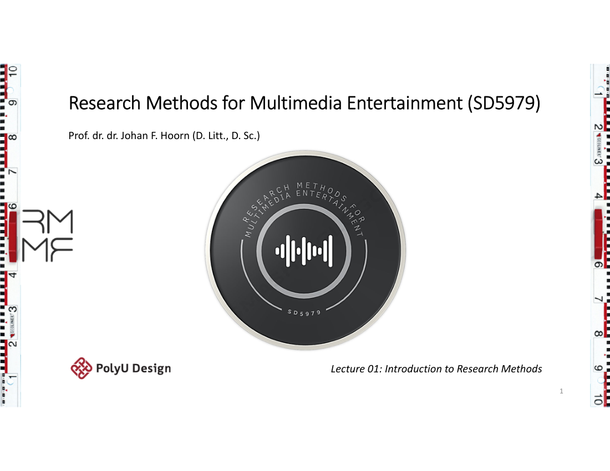
多媒体娱乐研究方法（Research Methods for Multimedia Entertainment, SD5979）
Prof. dr. dr. Johan F. Hoorn (D. Litt., D. Sc.)
第 01 讲：研究方法（Research Methods）导论（Lecture 01: Introduction to Research Methods）
英文检索原文（公式与版式请看左侧原图）
Research Methods for Multimedia Entertainment (SD5979) Prof. dr. dr. Johan F. Hoorn (D. Litt., D. Sc.) Lecture 01: Introduction to Research Methods 1

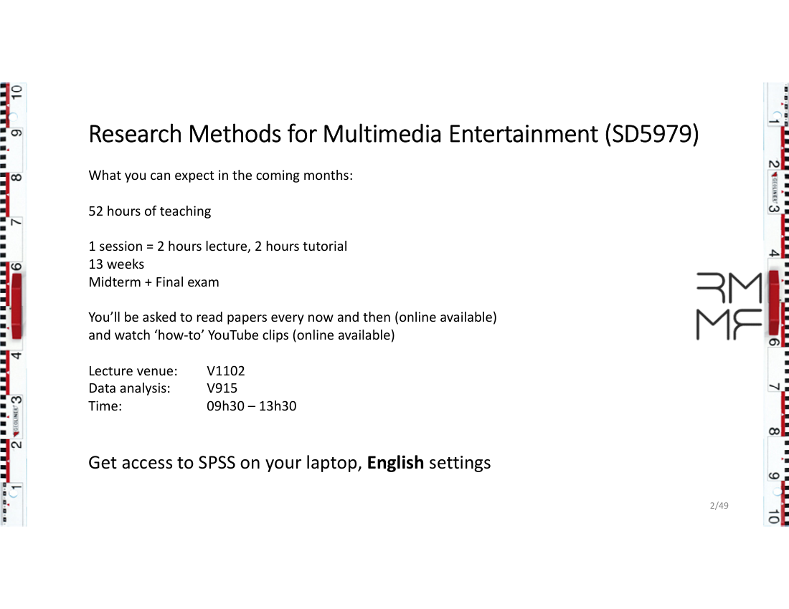
多媒体娱乐研究方法（Research Methods for Multimedia Entertainment, SD5979）
在接下来的几个月里，你可以期待：
- 52 小时教学课时
- 1 次课 = 2 小时讲授（lecture）+ 2 小时辅导课（tutorial）
- 共 13 周
- 期中考试（Midterm）+ 期末考试（Final exam）
- 你将被要求不时阅读论文（网上可获取），并观看操作指南类 YouTube 视频片段（网上可获取）
上课地点与时间：
- 讲授课教室（Lecture venue）：V1102
- 数据分析（Data analysis）教室：V915
- 时间：09h30 – 13h30
- 请在你的笔记本电脑上获取并安装英文设置的 SPSS
英文检索原文（公式与版式请看左侧原图）
2/49 Research Methods for Multimedia Entertainment (SD5979) What you can expect in the coming months: 52 hours of teaching 1 session = 2 hours lecture, 2 hours tutorial 13 weeks Midterm + Final exam You’ll be asked to read papers every now and then (online available) and watch ‘how-to’ YouTube clips (online available) Lecture venue: V1102 Data analysis: V915 Time: 09h30 – 13h30 Get access to SPSS on your laptop, English settings

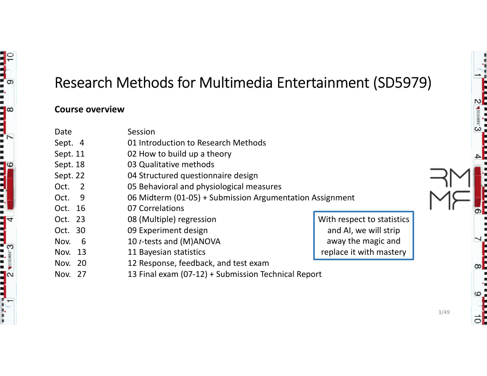
课程概览（Course overview）
| 日期（Date） | 课程单元（Session） |
|---|---|
| 9 月 4 日（Sept. 4） | 01 研究方法（Research Methods）导论（Introduction to Research Methods） |
| 9 月 11 日（Sept. 11） | 02 如何建构理论（theory）（How to build up a theory） |
| 9 月 18 日（Sept. 18） | 03 质性方法（Qualitative methods） |
| 9 月 22 日（Sept. 22） | 04 结构化问卷设计（Structured questionnaire design） |
| 10 月 2 日（Oct. 2） | 05 行为与生理测量（Behavioral and physiological measures） |
| 10 月 9 日（Oct. 9） | 06 期中考试（01-05）+ 提交论证（Argumentation）作业 |
| 10 月 16 日（Oct. 16） | 07 相关（Correlations） |
| 10 月 23 日（Oct. 23） | 08 （多元）回归（(Multiple) regression） |
| 10 月 30 日（Oct. 30） | 09 实验设计（Experiment design） |
| 11 月 6 日（Nov. 6） | 10 t 检验（t-tests）与（多元）方差分析（(M)ANOVA） |
| 11 月 13 日（Nov. 13） | 11 贝叶斯统计（Bayesian statistics） |
| 11 月 20 日（Nov. 20） | 12 答疑、反馈与模拟考试（Response, feedback, and test exam） |
| 11 月 27 日（Nov. 27） | 13 期末考试（07-12）+ 提交技术报告（Technical Report） |
多媒体娱乐研究方法（Research Methods for Multimedia Entertainment, SD5979）
关于统计学（statistics）与人工智能（AI），我们将拨开神秘面纱，代之以真正精通掌握。
英文检索原文（公式与版式请看左侧原图）
3/49 Course overview Date Session Sept. 4 01 Introduction to Research Methods Sept. 11 02 How to build up a theory Sept. 18 03 Qualitative methods Sept. 22 04 Structured questionnaire design Oct. 2 05 Behavioral and physiological measures Oct. 9 06 Midterm (01-05) + Submission Argumentation Assignment Oct. 16 07 Correlations Oct. 23 08 (Multiple) regression Oct. 30 09 Experiment design Nov. 6 10 t-tests and (M)ANOVA Nov. 13 11 Bayesian statistics Nov. 20 12 Response, feedback, and test exam Nov. 27 13 Final exam (07-12) + Submission Technical Report Research Methods for Multimedia Entertainment (SD5979) With respect to statistics and AI, we will strip away the magic and replace it with mastery

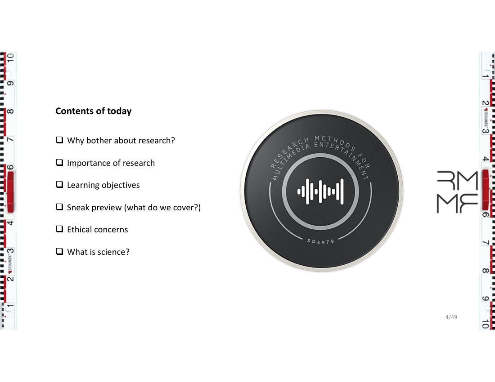
今日内容（Contents of today）
- 为什么要在意研究（research）？
- 研究的重要性（Importance of research）
- 学习目标（Learning objectives）
- 抢先预览（我们讲什么？）（Sneak preview (what do we cover?)）
- 伦理关切（Ethical concerns）
- 什么是科学（science）？
英文检索原文（公式与版式请看左侧原图）
4/49 Contents of today Why bother about research? Importance of research Learning objectives Sneak preview (what do we cover?) Ethical concerns What is science?

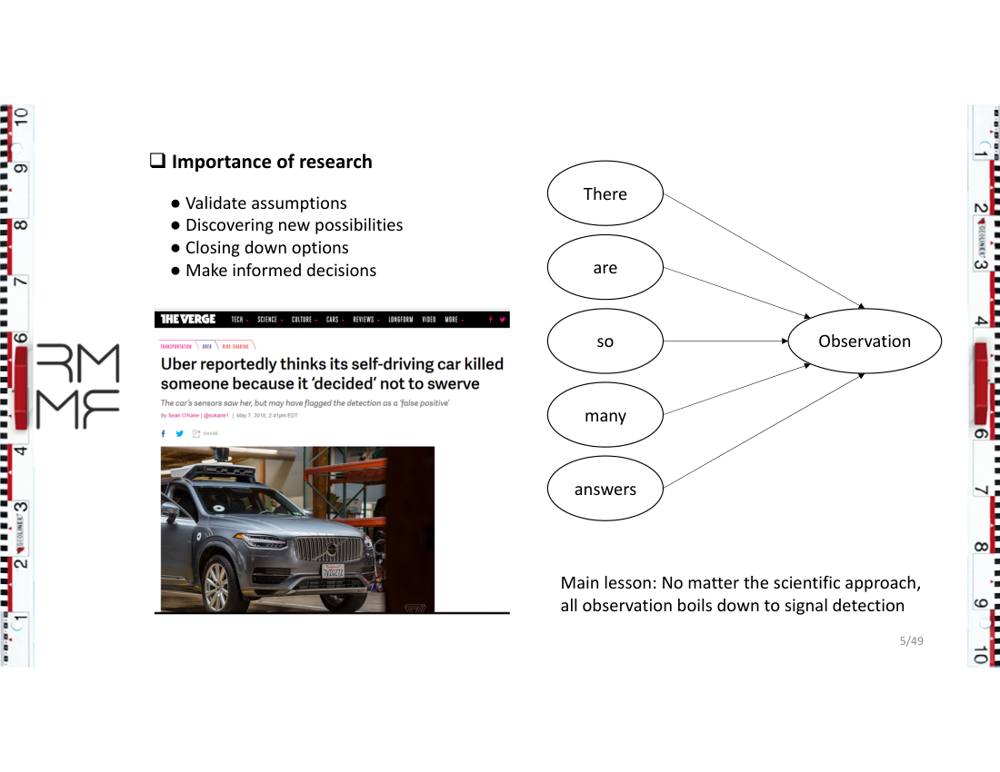
研究的重要性（Importance of research）
- 验证假设（Validate assumptions）
- 发现新的可能性（Discovering new possibilities）
- 收窄选项（Closing down options）
- 做出有依据的决策（Make informed decisions）
图示说明：
- 观察（Observation）：答案有如此之多（There are so many answers）
核心结论（Main lesson）：无论采用何种科学方法（scientific approach），一切观察（observation）归根结底都是信号检测（signal detection）。
英文检索原文（公式与版式请看左侧原图）
●Validate assumptions ●Discovering new possibilities ●Closing down options ●Make informed decisions Importance of research 5/49 There are so many answers Observation Main lesson: No matter the scientific approach, all observation boils down to signal detection

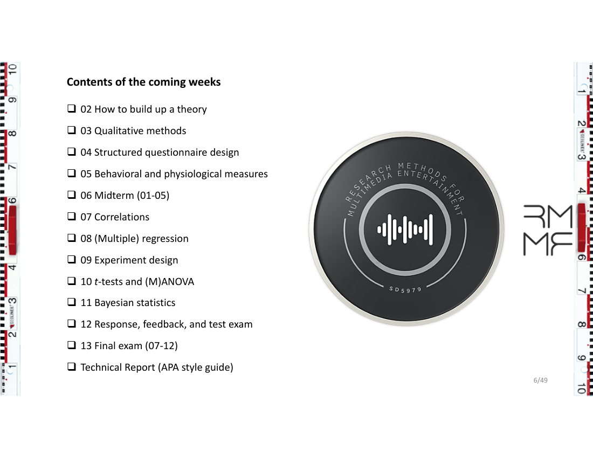
接下来几周的内容（Contents of the coming weeks）
- 02 如何建构理论（theory）（How to build up a theory）
- 03 质性方法（Qualitative methods）
- 04 结构化问卷设计（Structured questionnaire design）
- 05 行为与生理测量（Behavioral and physiological measures）
- 06 期中考试（01-05）
- 07 相关（Correlations）
- 08 （多元）回归（(Multiple) regression）
- 09 实验设计（Experiment design）
- 10 t 检验（t-tests）与（多元）方差分析（(M)ANOVA）
- 11 贝叶斯统计（Bayesian statistics）
- 12 答疑、反馈与模拟考试（Response, feedback, and test exam）
- 13 期末考试（07-12）
- 技术报告（Technical Report）（APA 格式指南（APA style guide））
英文检索原文（公式与版式请看左侧原图）
6/49 02 How to build up a theory 03 Qualitative methods 04 Structured questionnaire design 05 Behavioral and physiological measures 06 Midterm (01-05) 07 Correlations 08 (Multiple) regression 09 Experiment design 10 t-tests and (M)ANOVA 11 Bayesian statistics 12 Response, feedback, and test exam 13 Final exam (07-12) Technical Report (APA style guide) Contents of the coming weeks

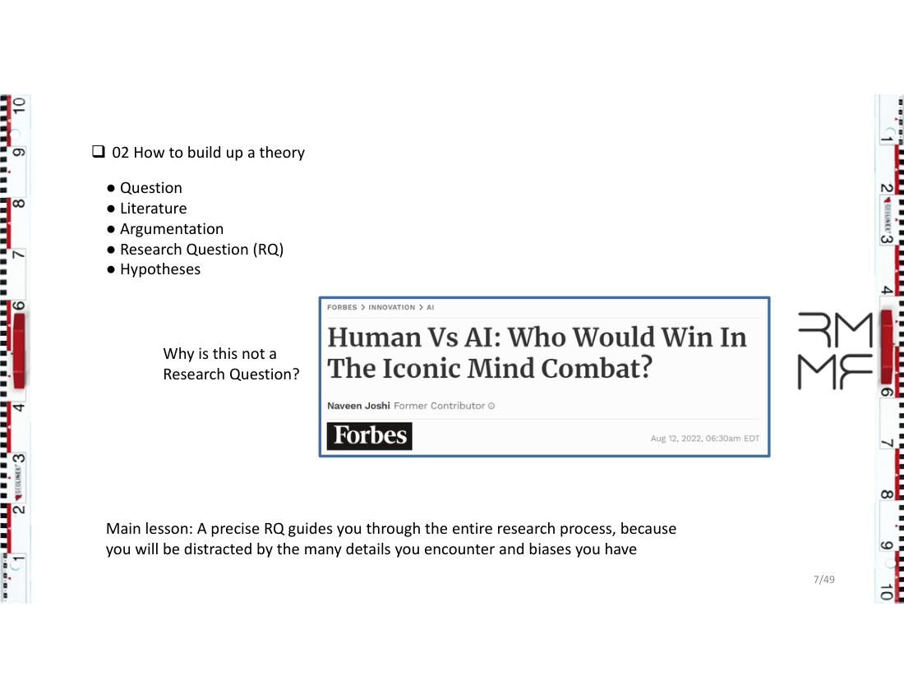
02 如何建构理论（theory）（How to build up a theory）
- 问题（Question）
- 文献（Literature）
- 论证（Argumentation）
- 研究问题（Research Question, RQ）
- 假设（Hypotheses）
图示提问：为什么这不是一个研究问题（Research Question）？
核心结论（Main lesson）：精确的研究问题（RQ）会指引你走完整个研究过程（research process），因为你很容易被遇到的众多细节和自身的偏见（biases）所干扰。
英文检索原文（公式与版式请看左侧原图）
02 How to build up a theory 7/49 ●Question ●Literature ●Argumentation ●Research Question (RQ) ●Hypotheses Main lesson: A precise RQ guides you through the entire research process, because you will be distracted by the many details you encounter and biases you have Why is this not a Research Question?

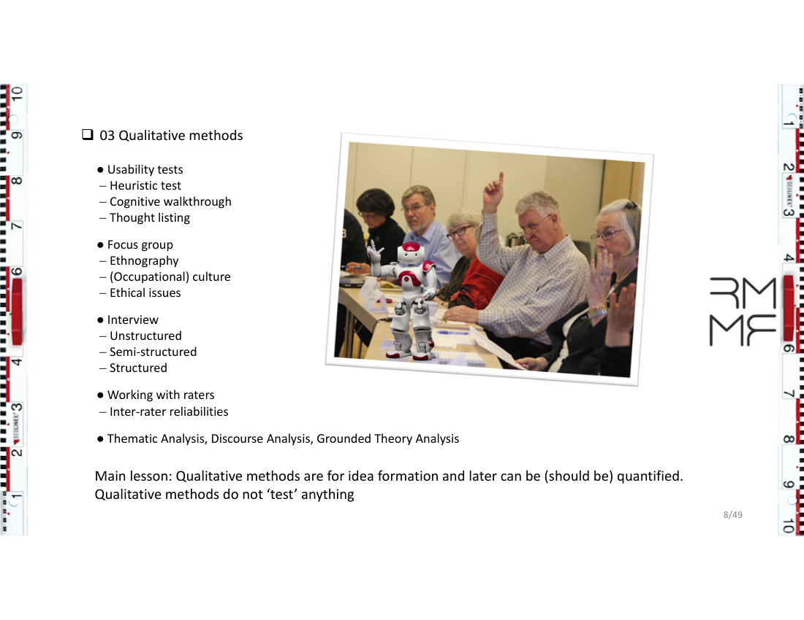
03 质性方法（Qualitative methods）
- 可用性测试（Usability tests）
- 启发式测试（Heuristic test）
- 认知走查（Cognitive walkthrough）
- 想法列举（Thought listing）
- 焦点小组（Focus group）
- 民族志（Ethnography）
- （职业）文化（(Occupational) culture）
- 伦理问题（Ethical issues）
- 访谈（Interview）
- 非结构式（Unstructured）
- 半结构式（Semi-structured）
- 结构式（Structured）
- 与评分者协作（Working with raters）
- 评分者间信度（Inter-rater reliabilities）
- 主题分析（Thematic Analysis）、话语分析（Discourse Analysis）、扎根理论分析（Grounded Theory Analysis）
核心结论（Main lesson）：质性方法（Qualitative methods）用于形成想法，且在之后可以（也应当）被量化（quantified）。质性方法（Qualitative methods）并不「检验」（test）任何东西。
英文检索原文（公式与版式请看左侧原图）
03 Qualitative methods 8/49 ●Usability tests Heuristic test Cognitive walkthrough Thought listing ●Focus group Ethnography (Occupational) culture Ethical issues ●Interview Unstructured Semi-structured Structured ●Working with raters Inter-rater reliabilities ●Thematic Analysis, Discourse Analysis, Grounded Theory Analysis Main lesson: Qualitative methods are for idea formation and later can be (should be) quantified. Qualitative methods do not ‘test’ anything

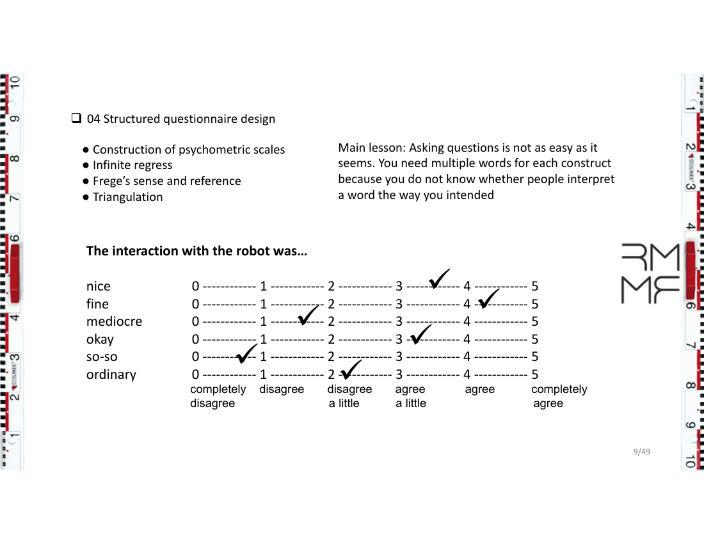
04 结构化问卷设计（Structured questionnaire design）
- 心理测量量表的构建（Construction of psychometric scales）
- 无穷回归（Infinite regress）
- 弗雷格的意义与指称（Frege’s sense and reference）
- 三角互证（Triangulation）
问卷量表示例：
量表选项：0（完全不同意 completely disagree）— 1（不同意 disagree）— 2（有一点不同意 disagree a little）— 3（有一点同意 agree a little）— 4（同意 agree）— 5（完全同意 completely agree）
题干：与机器人的互动是……（The interaction with the robot was…）
- nice（美好的）：
0 ------------ 1 ------------ 2 ------------ 3 ------------ 4 ------------ 5✓ - fine（良好的）：
0 ------------ 1 ------------ 2 ------------ 3 ------------ 4 ------------ 5✓ - mediocre（平庸的）：
0 ------------ 1 ------------ 2 ------------ 3 ------------ 4 ------------ 5✓ - okay（尚可的）：
0 ------------ 1 ------------ 2 ------------ 3 ------------ 4 ------------ 5✓ - so-so（马马虎虎的）：
0 ------------ 1 ------------ 2 ------------ 3 ------------ 4 ------------ 5✓ - ordinary（普通的）：
0 ------------ 1 ------------ 2 ------------ 3 ------------ 4 ------------ 5✓
核心结论（Main lesson）：提问并不像看起来那么容易。你需要为每一个构念（construct）使用多个词语，因为你无法确定人们是否会按照你所意图的方式去理解某一个词。
英文检索原文（公式与版式请看左侧原图）
completely disagree disagree agree agree completely disagree a little a little agree The interaction with the robot was… nice 0 ------------ 1 ------------ 2 ------------ 3 ------------ 4 ------------ 5 fine 0 ------------ 1 ------------ 2 ------------ 3 ------------ 4 ------------ 5 mediocre 0 ------------ 1 ------------ 2 ------------ 3 ------------ 4 ------------ 5 okay 0 ------------ 1 ------------ 2 ------------ 3 ------------ 4 ------------ 5 so-so 0 ------------ 1 ------------ 2 ------------ 3 ------------ 4 ------------ 5 ordinary 0 ------------ 1 ------------ 2 ------------ 3 ------------ 4 ------------ 5 04 Structured questionnaire design 9/49 ●Construction of psychometric scales ●Infinite regress ●Frege’s sense and reference ●Triangulation Main lesson: Asking questions is not as easy as it seems. You need multiple words for each construct because you do not know whether people interpret a word the way you intended

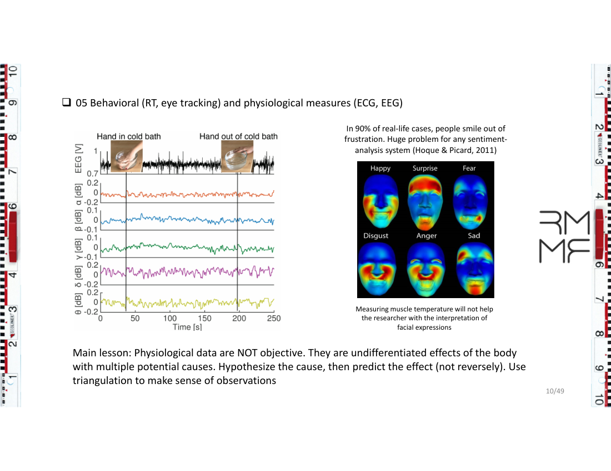
05 行为测量（Behavioral measures）（反应时（RT）、眼动追踪（eye tracking））与生理测量（physiological measures）（心电图（ECG）、脑电图（EEG））
图示说明：
- 测量肌肉温度并不会帮助研究者解释面部表情。
- 在 90% 的现实生活情境中，人们微笑是出于沮丧（frustration）。这对任何情感分析（sentiment-analysis）系统来说都是一个巨大问题（Hoque & Picard, 2011）。
核心结论（Main lesson）：生理数据（Physiological data）并非客观的。它们是身体具有多种潜在原因的未分化效应（undifferentiated effects）。应先对原因提出假设（Hypothesize），再预测结果（而非反其道而行之）。使用三角互证（triangulation）来理解观察结果（observations）。
英文检索原文（公式与版式请看左侧原图）
05 Behavioral (RT, eye tracking) and physiological measures (ECG, EEG) 10/49 Main lesson: Physiological data are NOT objective. They are undifferentiated effects of the body with multiple potential causes. Hypothesize the cause, then predict the effect (not reversely). Use triangulation to make sense of observations Measuring muscle temperature will not help the researcher with the interpretation of facial expressions In 90% of real-life cases, people smile out of frustration. Huge problem for any sentiment- analysis system (Hoque & Picard, 2011)

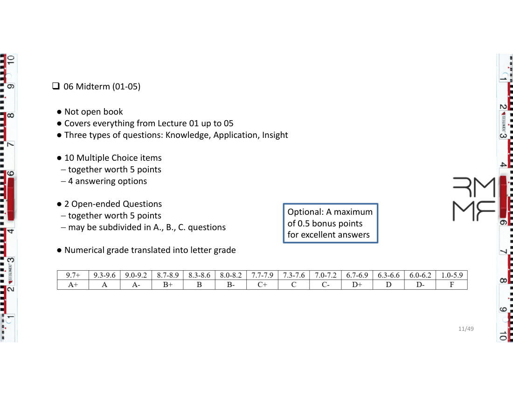
06 期中考试（Midterm, 01-05）
- 非开卷考试（Not open book）
- 涵盖第 01 讲至第 05 讲的全部内容
- 三种题型：知识题（Knowledge）、应用题（Application）、洞察题（Insight）
- 10 道选择题（Multiple Choice items）
- 共占 5 分
- 4 个作答选项
- 2 道开放式问题（Open-ended Questions）
- 共占 5 分
- 可能细分为 A.、B.、C. 小题
- 数值分数将换算为等级制成绩（letter grade）
- 可选加分项（Optional）：对于极为出色的回答，最多可获 0.5 分加分（bonus points）
英文检索原文（公式与版式请看左侧原图）
06 Midterm (01-05) 11/49 ●Not open book ●Covers everything from Lecture 01 up to 05 ●Three types of questions: Knowledge, Application, Insight ●10 Multiple Choice items together worth 5 points 4 answering options ●2 Open-ended Questions together worth 5 points may be subdivided in A., B., C. questions ●Numerical grade translated into letter grade Optional: A maximum of 0.5 bonus points for excellent answers

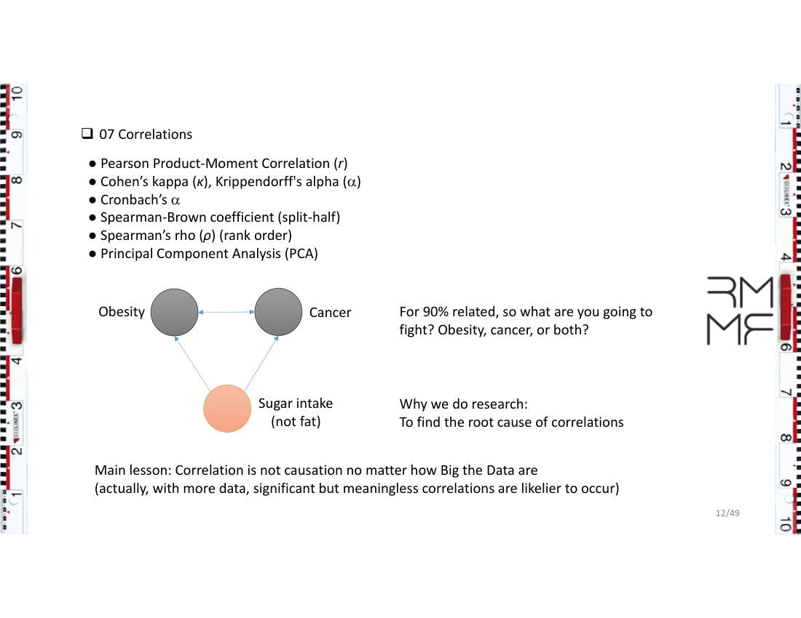
07 相关（Correlations）
- 皮尔逊积矩相关（Pearson Product-Moment Correlation, r）
- 科恩 kappa（Cohen’s kappa, κ）、克里彭多夫 alpha（Krippendorff's alpha, α）
- 克龙巴赫 α（Cronbach’s α）
- 斯皮尔曼-布朗系数（分半）（Spearman-Brown coefficient (split-half)）
- 斯皮尔曼 rho（等级顺序）（Spearman’s rho (ρ) (rank order)）
- 主成分分析（Principal Component Analysis, PCA）
图示与案例说明：
- 肥胖（Obesity）与癌症（Cancer）有 90% 的相关性，但两者的共同根源是糖摄入（Sugar intake）（而非脂肪，not fat）。
- 两者有 90% 的相关性，那么你打算针对哪一个来干预？肥胖、癌症，还是两者都针对？
- 我们为什么做研究：为了找出相关（correlations）背后的根本原因（root cause）。
核心结论（Main lesson）：无论数据有多「大」（Big Data），相关不等于因果（Correlation is not causation）（事实上，数据越多，统计上显著（significant）但毫无意义的相关（correlations）反而越容易出现）。
英文检索原文（公式与版式请看左侧原图）
07 Correlations 12/49 ●Pearson Product-Moment Correlation (r) ●Cohen’s kappa (κ), Krippendorff's alpha () ●Cronbach’s ●Spearman-Brown coefficient (split-half) ●Spearman’s rho (ρ) (rank order) ●Principal Component Analysis (PCA) Main lesson: Correlation is not causation no matter how Big the Data are (actually, with more data, significant but meaningless correlations are likelier to occur) Obesity Cancer Sugar intake (not fat) For 90% related, so what are you going to fight? Obesity, cancer, or both? Why we do research: To find the root cause of correlations

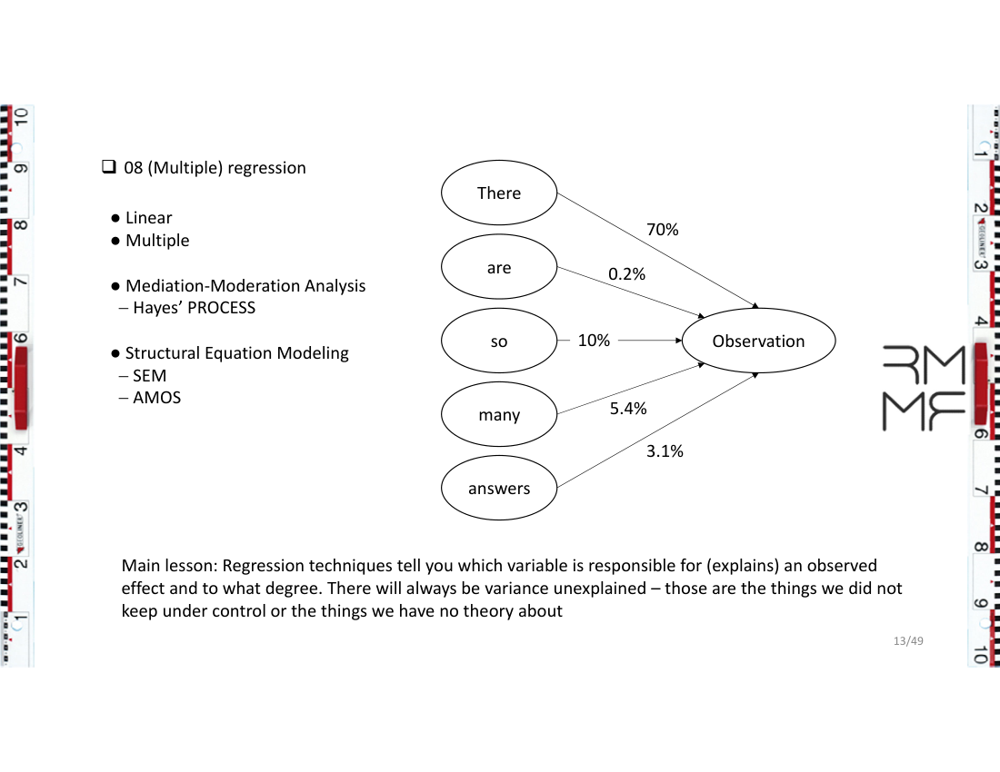
08 （多元）回归（(Multiple) regression）
- 线性回归（Linear）
- 多元回归（Multiple）
- 中介—调节分析（Mediation-Moderation Analysis）
- Hayes’ PROCESS
- 结构方程建模（Structural Equation Modeling）
- 结构方程建模（SEM）
- AMOS
图示说明：
- 观察（Observation）：答案有如此之多（There are so many answers）
- 各项解释度占比：
70%、0.2%、10%、5.4%、3.1%
核心结论（Main lesson）：回归技术（Regression techniques）能告诉你哪一个变量（variable）对所观察到的效应（observed effect）负责（即起解释作用），以及解释到什么程度。总会存在未被解释的方差（variance）——那些正是我们未能加以控制（keep under control）的因素，或是我们尚无理论（theory）加以解释的事物。
英文检索原文（公式与版式请看左侧原图）
08 (Multiple) regression 13/49 ●Linear ●Multiple ●Mediation-Moderation Analysis Hayes’ PROCESS ●Structural Equation Modeling SEM AMOS Main lesson: Regression techniques tell you which variable is responsible for (explains) an observed effect and to what degree. There will always be variance unexplained – those are the things we did not keep under control or the things we have no theory about There are so many answers Observation 70% 0.2% 10% 5.4% 3.1%

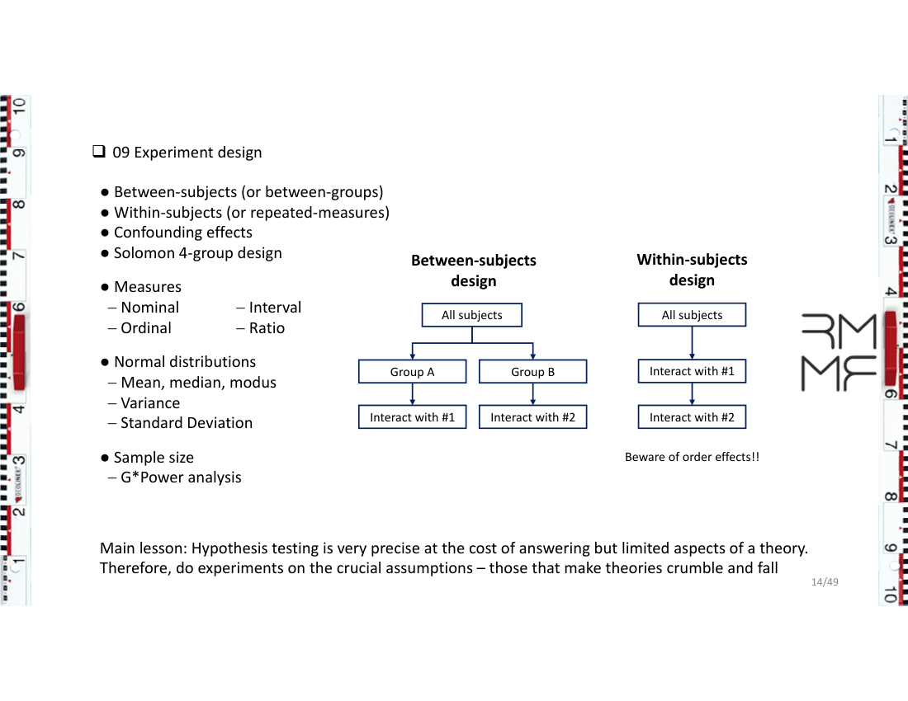
09 实验设计（Experiment design）
- 被试间（或组间）（Between-subjects (or between-groups)）
- 被试内（或重复测量）（Within-subjects (or repeated-measures)）
- 混淆效应（Confounding effects）
- 所罗门四组设计（Solomon 4-group design）
- 测量尺度（Measures）
- 称名尺度（Nominal）
- 等距尺度（Interval）
- 顺序尺度（Ordinal）
- 比率尺度（Ratio）
- 正态分布（Normal distributions）
- 均值（Mean）、中位数（median）、众数（modus）
- 方差（Variance）
- 标准差（Standard Deviation）
- 样本量（Sample size）
- G*Power 分析（G*Power analysis）
图示说明：
- 被试间设计（Between-subjects design）：所有被试（All subjects）分为 A 组（Group A，与 #1 互动）和 B 组（Group B，与 #2 互动）。
- 被试内设计（Within-subjects design）：所有被试（All subjects）先与 #1 互动，再与 #2 互动。小心顺序效应（order effects）！！
核心结论（Main lesson）：假设检验（Hypothesis testing）非常精确，但代价是只能回答理论（theory）中有限的几个方面。因此，应当针对关键假设（assumptions）来做实验（experiments）——也就是那些一旦被证伪便会让整个理论（theories）轰然倒塌的假设。
英文检索原文（公式与版式请看左侧原图）
09 Experiment design 14/49 ●Between-subjects (or between-groups) ●Within-subjects (or repeated-measures) ●Confounding effects ●Solomon 4-group design ●Measures Nominal Interval Ordinal Ratio ●Normal distributions Mean, median, modus Variance Standard Deviation ●Sample size G*Power analysis Main lesson: Hypothesis testing is very precise at the cost of answering but limited aspects of a theory. Therefore, do experiments on the crucial assumptions – those that make theories crumble and fall All subjects Group A Group B Interact with #1 Interact with #2 Between-subjects design All subjects Interact with #1 Interact with #2 Within-subjects design Beware of order effects!!

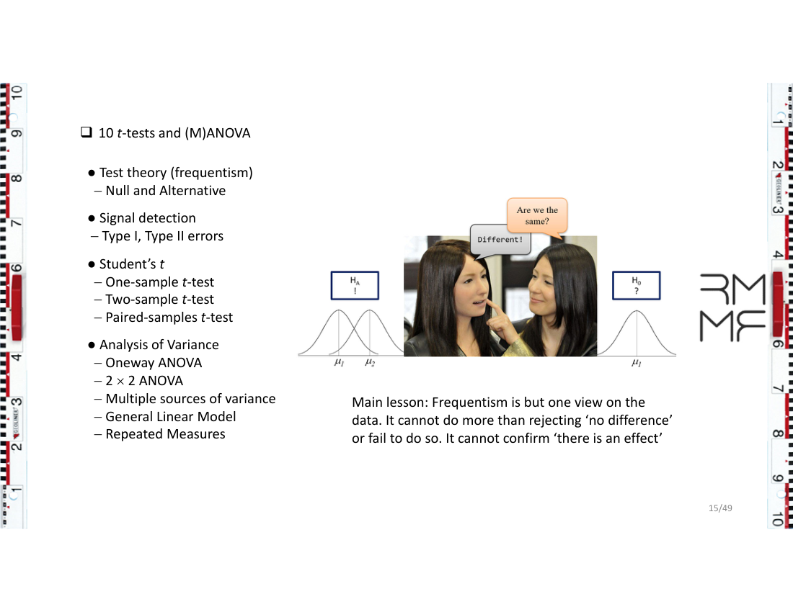
10 t 检验（t-tests）与(多元)方差分析（(M)ANOVA）
- 检验理论（频率主义）（Test theory (frequentism)）
- 零假设与备择假设（Null and Alternative）
- 信号检测（Signal detection）
- I 类错误、II 类错误（Type I, Type II errors）
- 学生 t 分布（Student’s t）
- 单样本 t 检验（One-sample t-test）
- 双样本 t 检验（Two-sample t-test）
- 配对样本 t 检验（Paired-samples t-test）
- 方差分析（Analysis of Variance）
- 单因素 ANOVA（Oneway ANOVA）
- 2 × 2 方差分析（2 ×2 ANOVA）
- 多个变异来源（Multiple sources of variance）
- 一般线性模型（General Linear Model）
- 重复测量（Repeated Measures）
核心结论（Main lesson）：频率主义（Frequentism）只是看待数据的一种视角。它最多只能拒绝「无差异」或未能拒绝之，而无法证实「存在效应（effect）」。
英文检索原文（公式与版式请看左侧原图）
10 t-tests and (M)ANOVA 15/49 ●Test theory (frequentism) Null and Alternative ●Signal detection Type I, Type II errors ●Student’s t One-sample t-test Two-sample t-test Paired-samples t-test ●Analysis of Variance Oneway ANOVA 2 2 ANOVA Multiple sources of variance General Linear Model Repeated Measures Main lesson: Frequentism is but one view on the data. It cannot do more than rejecting ‘no difference’ or fail to do so. It cannot confirm ‘there is an effect’

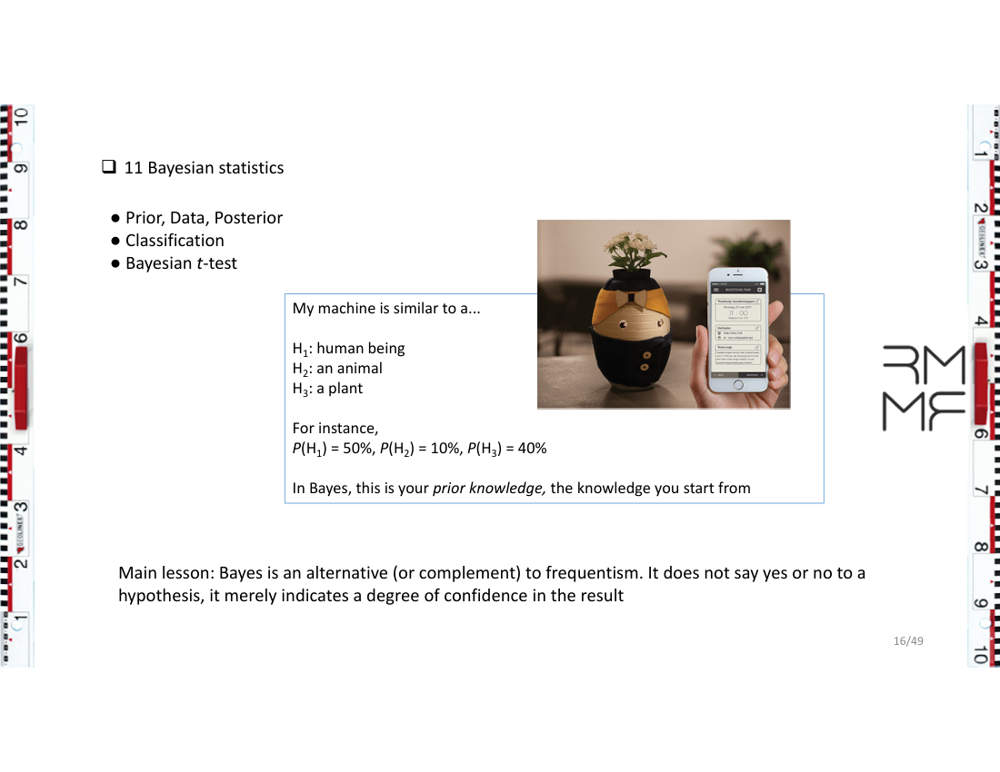
11 贝叶斯统计（Bayesian statistics）
- 先验（Prior）、数据（Data）、后验（Posterior）
- 分类（Classification）
- 贝叶斯 t 检验（Bayesian t-test）
核心结论（Main lesson）：贝叶斯方法（Bayes）是频率主义（frequentism）的一种替代方案（或补充）。它不会对假设（hypothesis）给出「是」或「否」的判断，而只是表明对结果的置信程度（degree of confidence）。
我的机器类似于……
- H1：人类
- H2：动物
- H3：植物
例如，
P(H1) = 50%、P(H2) = 10%、P(H3) = 40%
在贝叶斯方法（Bayes）中，这就是你的先验知识（prior knowledge），即你出发时所基于的知识。
英文检索原文（公式与版式请看左侧原图）
11 Bayesian statistics 16/49 ●Prior, Data, Posterior ●Classification ●Bayesian t-test Main lesson: Bayes is an alternative (or complement) to frequentism. It does not say yes or no to a hypothesis, it merely indicates a degree of confidence in the result My machine is similar to a... H1: human being H2: an animal H3: a plant For instance, P(H1) = 50%, P(H2) = 10%, P(H3) = 40% In Bayes, this is your prior knowledge, the knowledge you start from

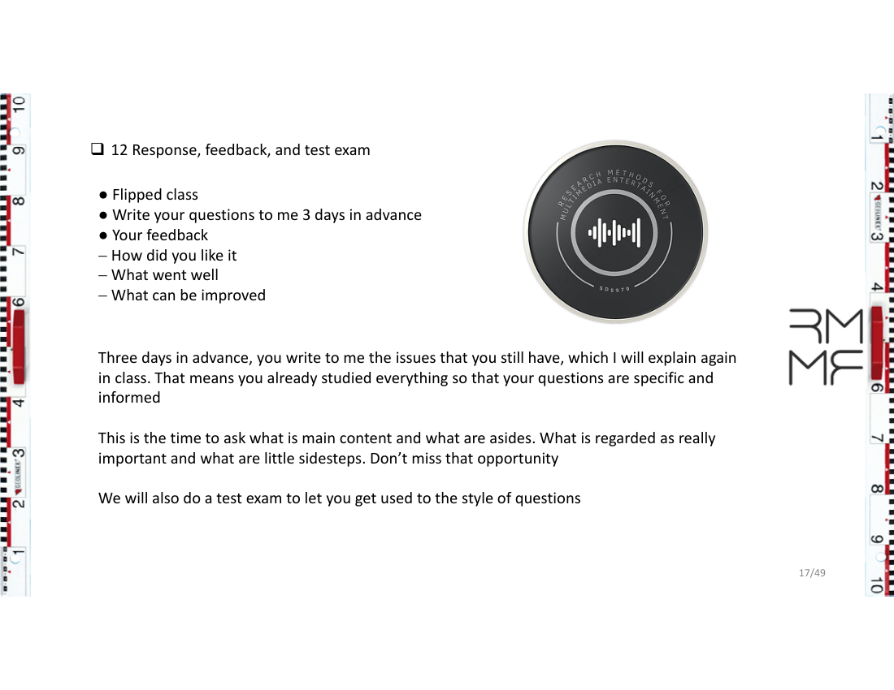
12 回应、反馈与模拟考试（Response, feedback, and test exam）
- 翻转课堂（Flipped class）
- 提前 3 天把你的问题写信发给我
- 你的反馈
- 你对课程的喜爱程度如何
- 哪些地方做得好
- 哪些方面可以改进
提前三天，你把仍然存在的疑问写信发给我，我会在课堂上再次讲解。这意味着你已经把所有内容都学习了一遍，因此你的问题会是具体且有依据的。
这正是询问哪些是核心内容、哪些只是旁白补充的好时机；哪些被视为真正重要的内容，哪些只是小插曲。不要错过这个机会。
我们还会进行一次模拟考试，让大家熟悉题型风格。
英文检索原文（公式与版式请看左侧原图）
12 Response, feedback, and test exam 17/49 ●Flipped class ●Write your questions to me 3 days in advance ●Your feedback How did you like it What went well What can be improved Three days in advance, you write to me the issues that you still have, which I will explain again in class. That means you already studied everything so that your questions are specific and informed This is the time to ask what is main content and what are asides. What is regarded as really important and what are little sidesteps. Don’t miss that opportunity We will also do a test exam to let you get used to the style of questions

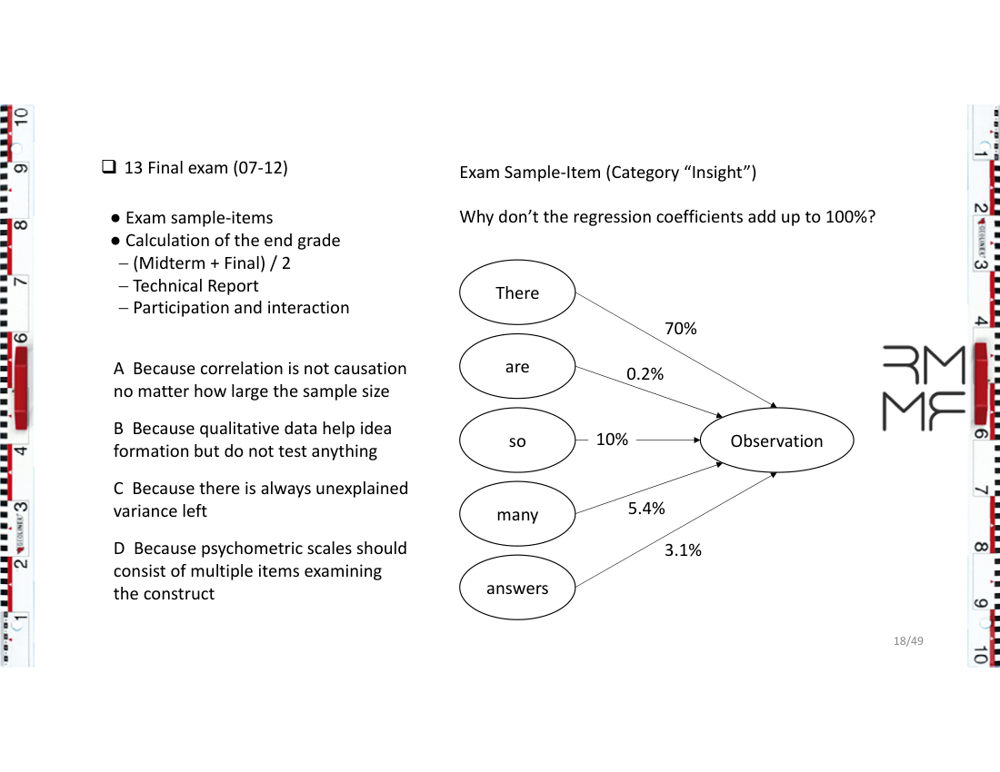
13 期末考试（07-12）（Final exam (07-12)）
- 考试样题
- 最终成绩计算
- (期中 + 期末) / 2
- 技术报告（Technical Report）
- 课堂参与和互动
有这么多答案
观察值（Observation）：70%、0.2%、10%、5.4%、3.1%
考试样题（「洞察」类别，Category “Insight”）
为什么回归系数（regression coefficients）加起来不等于 100%？
A. 因为相关不等于因果（correlation is not causation），无论样本量（sample size）有多大
B. 因为质性数据（qualitative data）有助于想法的形成，但不检验任何内容
C. 因为总是会残留未解释方差（unexplained variance）
D. 因为心理测量量表（psychometric scales）应由多个考察该构念（construct）的题项（items）组成
英文检索原文（公式与版式请看左侧原图）
13 Final exam (07-12) 18/49 ●Exam sample-items ●Calculation of the end grade (Midterm + Final) / 2 Technical Report Participation and interaction There are so many answers Observation 70% 0.2% 10% 5.4% 3.1% Exam Sample-Item (Category “Insight”) Why don’t the regression coefficients add up to 100%? A Because correlation is not causation no matter how large the sample size B Because qualitative data help idea formation but do not test anything C Because there is always unexplained variance left D Because psychometric scales should consist of multiple items examining the construct

13 期末考试（07-12）（Final exam (07-12)）
- 考试样题
- 最终成绩计算
- (期中 + 期末) / 2
- 技术报告（Technical Report）
- 课堂参与和互动
有这么多答案
观察值（Observation）：70%、0.2%、10%、5.4%、3.1%
考试样题（「洞察」类别，Category “Insight”）
为什么回归系数（regression coefficients）加起来不等于 100%？
A. 因为相关不等于因果（correlation is not causation），无论样本量（sample size）有多大
B. 因为质性数据（qualitative data）有助于想法的形成，但不检验任何内容
C. 因为总是会残留未解释方差（unexplained variance）
D. 因为心理测量量表（psychometric scales）应由多个考察该构念（construct）的题项（items）组成
英文检索原文（公式与版式请看左侧原图）
13 Final exam (07-12) 19/49 ●Exam sample-items ●Calculation of the end grade (Midterm + Final) / 2 Technical Report Participation and interaction There are so many answers Observation 70% 0.2% 10% 5.4% 3.1% Exam Sample-Item (Category “Insight”) Why don’t the regression coefficients add up to 100%? A Because correlation is not causation no matter how large the sample size B Because qualitative data help idea formation but do not test anything C Because there is always unexplained variance left D Because psychometric scales should consist of multiple items examining the construct

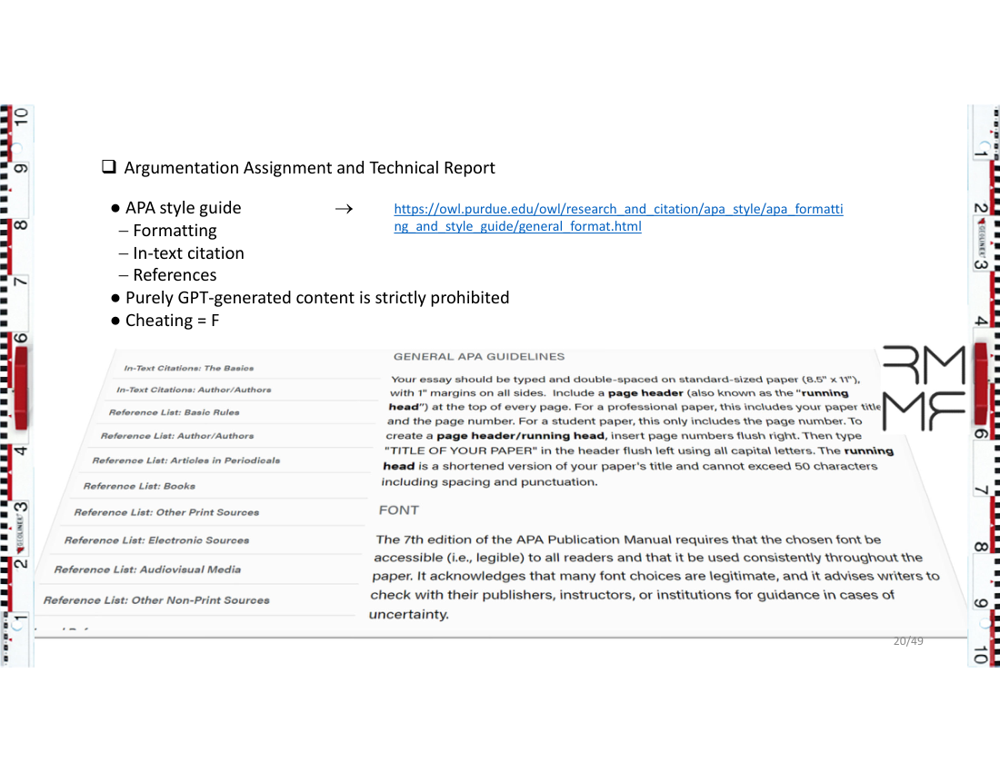
论证（Argumentation）作业与技术报告（Technical Report）
- APA 格式指南（APA style guide） →
- 格式排版（Formatting）
- 文内引用（In-text citation）
- 参考文献（References）
- 严禁纯由 GPT 生成的内容
- 作弊 = F（不及格）
参考链接：https://owl.purdue.edu/owl/research_and_citation/apa_style/apa_formatting_and_style_guide/general_format.html
英文检索原文（公式与版式请看左侧原图）
Argumentation Assignment and Technical Report 20/49 ●APA style guide Formatting In-text citation References ●Purely GPT-generated content is strictly prohibited ●Cheating = F https://owl.purdue.edu/owl/research_and_citation/apa_style/apa_formatti ng_and_style_guide/general_format.html

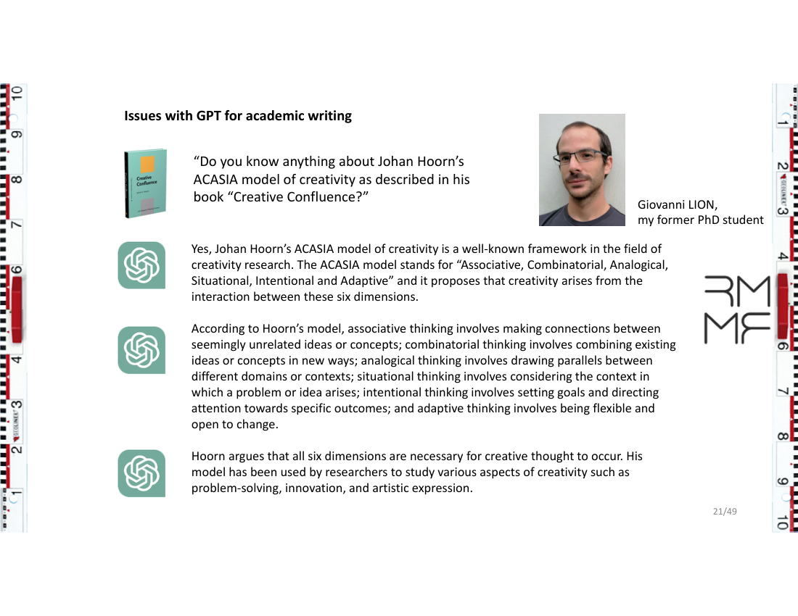
GPT 用于学术写作的问题（Issues with GPT for academic writing）
「你知道 Johan Hoorn 在其著作《Creative Confluence》中描述的创造力 ACASIA 模型吗？」
是的，Johan Hoorn 的创造力 ACASIA 模型是创造力研究领域中一个著名的理论框架（framework）。ACASIA 模型代表「联想（Associative）、组合（Combinatorial）、类比（Analogical）、情境（Situational）、意图（Intentional）与适应（Adaptive）」，该模型提出创造力源于这六个维度（dimensions）之间的交互作用。
根据 Hoorn 的模型，联想思维涉及在看似无关的想法或概念之间建立联系；组合思维涉及以新方式组合现有的想法或概念；类比思维涉及在不同领域或语境之间寻找相似之处；情境思维涉及考虑问题或想法产生时的情境；意图思维涉及设定目标并将注意力指向特定结果；适应思维涉及保持灵活并对变化持开放态度。
Hoorn 认为，这六个维度（dimensions）对于创造性思维的发生都是必要的。研究者已使用他的模型来研究创造力的各个方面，例如问题解决、创新和艺术表达。
Giovanni LION，我以前的博士生
英文检索原文（公式与版式请看左侧原图）
21/49 Yes, Johan Hoorn’s ACASIA model of creativity is a well-known framework in the field of creativity research. The ACASIA model stands for “Associative, Combinatorial, Analogical, Situational, Intentional and Adaptive” and it proposes that creativity arises from the interaction between these six dimensions. According to Hoorn’s model, associative thinking involves making connections between seemingly unrelated ideas or concepts; combinatorial thinking involves combining existing ideas or concepts in new ways; analogical thinking involves drawing parallels between different domains or contexts; situational thinking involves considering the context in which a problem or idea arises; intentional thinking involves setting goals and directing attention towards specific outcomes; and adaptive thinking involves being flexible and open to change. Hoorn argues that all six dimensions are necessary for creative thought to occur. His model has been used by researchers to study various aspects of creativity such as problem-solving, innovation, and artistic expression. “Do you know anything about Johan Hoorn’s ACASIA model of creativity as described in his book “Creative Confluence?” Issues with GPT for academic writing Giovanni LION, my former PhD student

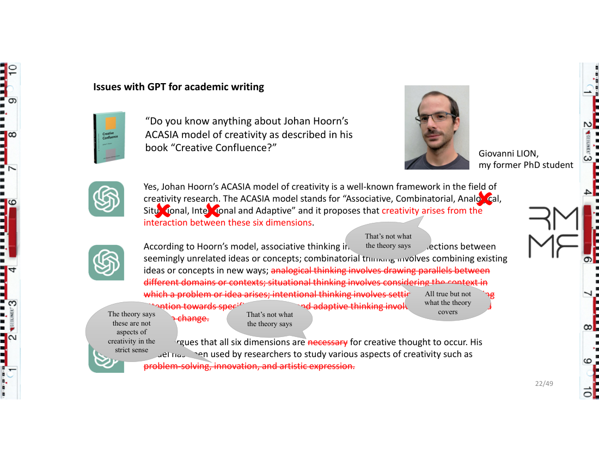
GPT 用于学术写作的问题（Issues with GPT for academic writing）
「你知道 Johan Hoorn 在其著作《Creative Confluence》中描述的创造力 ACASIA 模型吗？」
是的，Johan Hoorn 的创造力 ACASIA 模型是创造力研究领域中一个著名的理论框架（framework）。ACASIA 模型代表「联想（Associative）、组合（Combinatorial）、类比（Analogical）、情境（Situational）、意图（Intentional）与适应（Adaptive）」，该模型提出创造力源于这六个维度（dimensions）之间的交互作用。
根据 Hoorn 的模型，联想思维涉及在看似无关的想法或概念之间建立联系；组合思维涉及以新方式组合现有的想法或概念；类比思维涉及在不同领域或语境之间寻找相似之处；情境思维涉及考虑问题或想法产生时的情境；意图思维涉及设定目标并将注意力指向特定结果；适应思维涉及保持灵活并对变化持开放态度。
Hoorn 认为，这六个维度（dimensions）对于创造性思维的发生都是必要的。研究者已使用他的模型来研究创造力的各个方面，例如问题解决、创新和艺术表达。
批注与纠错：
- ✗ 这不是该理论（theory）所说的内容
- ✗ 这不是该理论（theory）所说的内容
- ✗ 这些都对，但并非该理论（theory）所涵盖的内容
- 该理论（theory）认为，严格来说，这些并不是创造力的构成方面
Giovanni LION，我以前的博士生
英文检索原文（公式与版式请看左侧原图）
22/49 Yes, Johan Hoorn’s ACASIA model of creativity is a well-known framework in the field of creativity research. The ACASIA model stands for “Associative, Combinatorial, Analogical, Situational, Intentional and Adaptive” and it proposes that creativity arises from the interaction between these six dimensions. According to Hoorn’s model, associative thinking involves making connections between seemingly unrelated ideas or concepts; combinatorial thinking involves combining existing ideas or concepts in new ways; analogical thinking involves drawing parallels between different domains or contexts; situational thinking involves considering the context in which a problem or idea arises; intentional thinking involves setting goals and directing attention towards specific outcomes; and adaptive thinking involves being flexible and open to change. Hoorn argues that all six dimensions are necessary for creative thought to occur. His model has been used by researchers to study various aspects of creativity such as problem-solving, innovation, and artistic expression. “Do you know anything about Johan Hoorn’s ACASIA model of creativity as described in his book “Creative Confluence?” That’s not what the theory says That’s not what the theory says All true but not what the theory covers The theory says these are not aspects of creativity in the strict sense Giovanni LION, my former PhD student Issues with GPT for academic writing

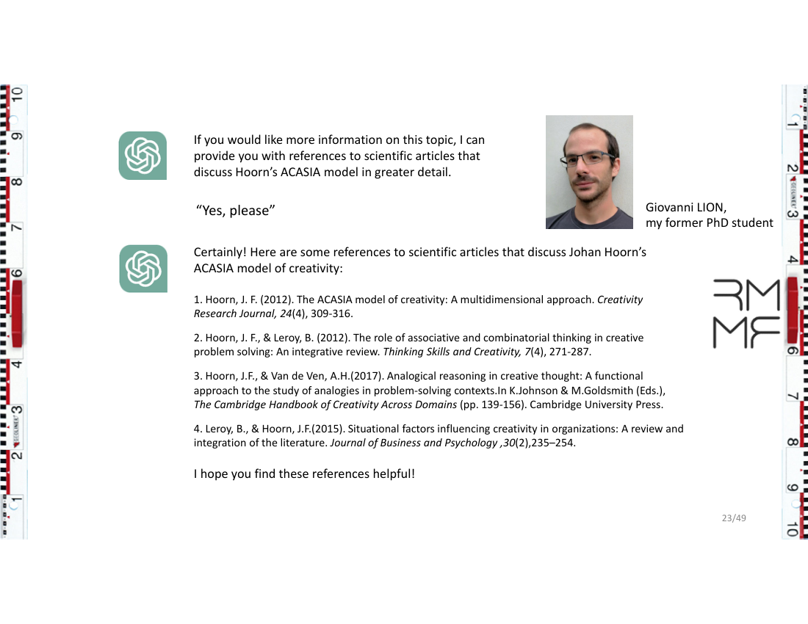
若您想了解该主题的更多信息，我可以为您提供更详细探讨 Hoorn 的 ACASIA 模型（ACASIA model） 的科学论文（scientific articles）参考文献（references）。
“好的，请提供”
当然可以！以下是几篇探讨 Johan Hoorn 的 ACASIA 创造力模型（ACASIA model of creativity） 的科学论文（scientific articles）参考文献（references）：
- Hoorn, J. F. (2012). The ACASIA model of creativity: A multidimensional approach. Creativity Research Journal, 24(4), 309-316.
- Hoorn, J. F., & Leroy, B. (2012). The role of associative and combinatorial thinking in creative problem solving: An integrative review. Thinking Skills and Creativity, 7(4), 271-287.
- Hoorn, J.F., & Van de Ven, A.H.(2017). Analogical reasoning in creative thought: A functional approach to the study of analogies in problem-solving contexts.In K.Johnson & M.Goldsmith (Eds.), The Cambridge Handbook of Creativity Across Domains (pp. 139-156). Cambridge University Press.
- Leroy, B., & Hoorn, J.F.(2015). Situational factors influencing creativity in organizations: A review and integration of the literature. Journal of Business and Psychology ,30(2),235–254.
希望这些参考文献（references）对您有所帮助！
Giovanni LION，我以前的博士生
英文检索原文（公式与版式请看左侧原图）
23/49 Certainly! Here are some references to scientific articles that discuss Johan Hoorn’s ACASIA model of creativity: 1. Hoorn, J. F. (2012). The ACASIA model of creativity: A multidimensional approach. Creativity Research Journal, 24(4), 309-316. 2. Hoorn, J. F., & Leroy, B. (2012). The role of associative and combinatorial thinking in creative problem solving: An integrative review. Thinking Skills and Creativity, 7(4), 271-287. 3. Hoorn, J.F., & Van de Ven, A.H.(2017). Analogical reasoning in creative thought: A functional approach to the study of analogies in problem-solving contexts.In K.Johnson & M.Goldsmith (Eds.), The Cambridge Handbook of Creativity Across Domains (pp. 139-156). Cambridge University Press. 4. Leroy, B., & Hoorn, J.F.(2015). Situational factors influencing creativity in organizations: A review and integration of the literature. Journal of Business and Psychology ,30(2),235–254. I hope you find these references helpful! “Yes, please” If you would like more information on this topic, I can provide you with references to scientific articles that discuss Hoorn’s ACASIA model in greater detail. Giovanni LION, my former PhD student

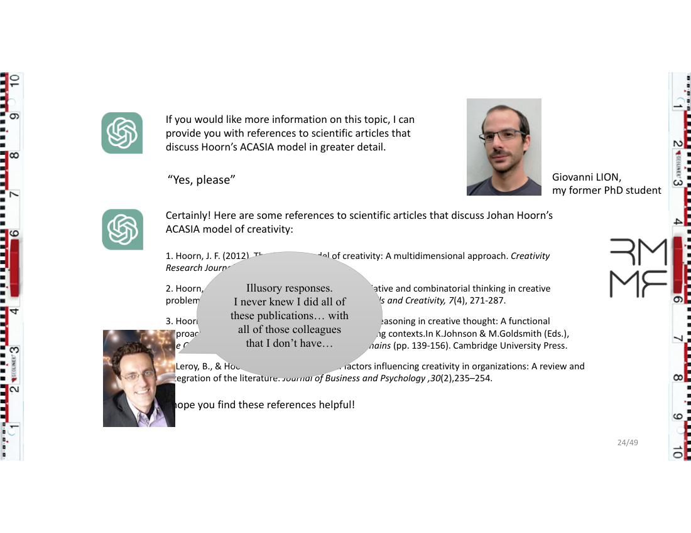
若您想了解该主题的更多信息，我可以为您提供更详细探讨 Hoorn 的 ACASIA 模型（ACASIA model） 的科学论文（scientific articles）参考文献（references）。
“好的，请提供”
当然可以！以下是几篇探讨 Johan Hoorn 的 ACASIA 创造力模型（ACASIA model of creativity） 的科学论文（scientific articles）参考文献（references）：
- Hoorn, J. F. (2012). The ACASIA model of creativity: A multidimensional approach. Creativity Research Journal, 24(4), 309-316.
- Hoorn, J. F., & Leroy, B. (2012). The role of associative and combinatorial thinking in creative problem solving: An integrative review. Thinking Skills and Creativity, 7(4), 271-287.
- Hoorn, J.F., & Van de Ven, A.H.(2017). Analogical reasoning in creative thought: A functional approach to the study of analogies in problem-solving contexts.In K.Johnson & M.Goldsmith (Eds.), The Cambridge Handbook of Creativity Across Domains (pp. 139-156). Cambridge University Press.
- Leroy, B., & Hoorn, J.F.(2015). Situational factors influencing creativity in organizations: A review and integration of the literature. Journal of Business and Psychology ,30(2),235–254.
希望这些参考文献（references）对您有所帮助！
幻觉式回答（Illusory responses）。我竟不知道自己发表过所有这些论文……还是和那些我根本没有的同事一起……
Giovanni LION，我以前的博士生
英文检索原文（公式与版式请看左侧原图）
24/49 Certainly! Here are some references to scientific articles that discuss Johan Hoorn’s ACASIA model of creativity: 1. Hoorn, J. F. (2012). The ACASIA model of creativity: A multidimensional approach. Creativity Research Journal, 24(4), 309-316. 2. Hoorn, J. F., & Leroy, B. (2012). The role of associative and combinatorial thinking in creative problem solving: An integrative review. Thinking Skills and Creativity, 7(4), 271-287. 3. Hoorn, J.F., & Van de Ven, A.H.(2017). Analogical reasoning in creative thought: A functional approach to the study of analogies in problem-solving contexts.In K.Johnson & M.Goldsmith (Eds.), The Cambridge Handbook of Creativity Across Domains (pp. 139-156). Cambridge University Press. 4. Leroy, B., & Hoorn, J.F.(2015). Situational factors influencing creativity in organizations: A review and integration of the literature. Journal of Business and Psychology ,30(2),235–254. I hope you find these references helpful! “Yes, please” If you would like more information on this topic, I can provide you with references to scientific articles that discuss Hoorn’s ACASIA model in greater detail. Illusory responses. I never knew I did all of these publications… with all of those colleagues that I don’t have… Giovanni LION, my former PhD student

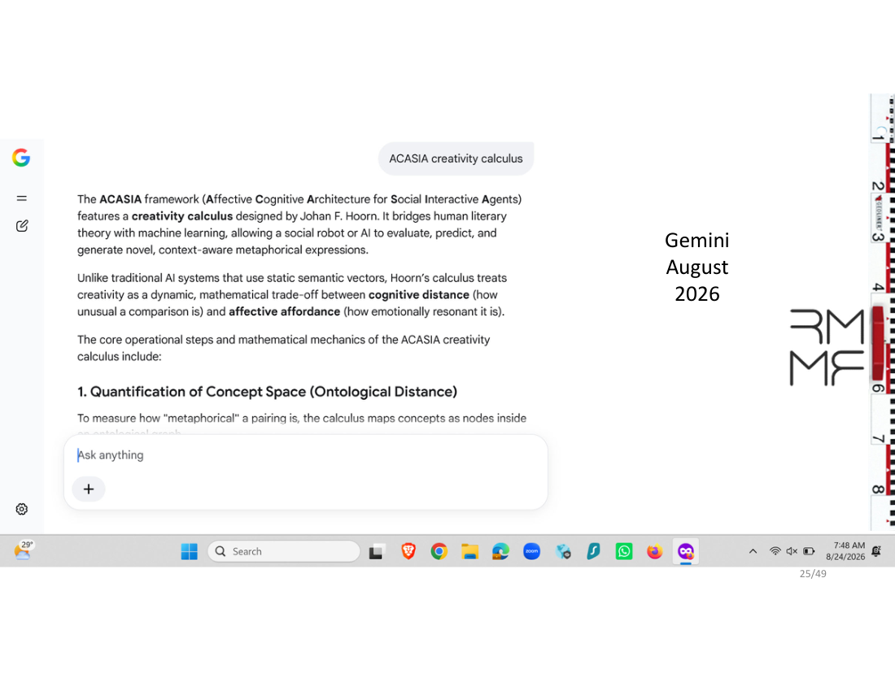
ACASIA 创造力微积分（ACASIA creativity calculus）
图示说明：Gemini（2026 年 8 月）
ACASIA 框架（面向社交交互智能体的情感认知架构，Affective Cognitive Architecture for Social Interactive Agents）包含由 Johan F. Hoorn 设计的创造力微积分（creativity calculus）。它将人类文学理论与机器学习（machine learning）连接起来，使社交机器人或 AI 能够评估、预测并生成新颖且具有情境感知能力的隐喻表达。
与使用静态语义向量（semantic vectors）的传统 AI 系统不同，Hoorn 的微积分将创造力视为认知距离（cognitive distance）（即一种类比有多么不寻常）与情感可供性（affective affordance）（即它在情感上有多大共鸣）之间的动态数学权衡。
ACASIA 创造力微积分的核心操作步骤与数学机制包括：
1. 概念空间的量化（Quantification）（本体距离（Ontological Distance））
为了测量（measure）一对概念的“隐喻程度”，该微积分将概念映射为节点，置于……（注：页面底部后续文字被界面“Ask anything”输入框遮挡）
英文检索原文（公式与版式请看左侧原图）
Gemini August 2026 25/49

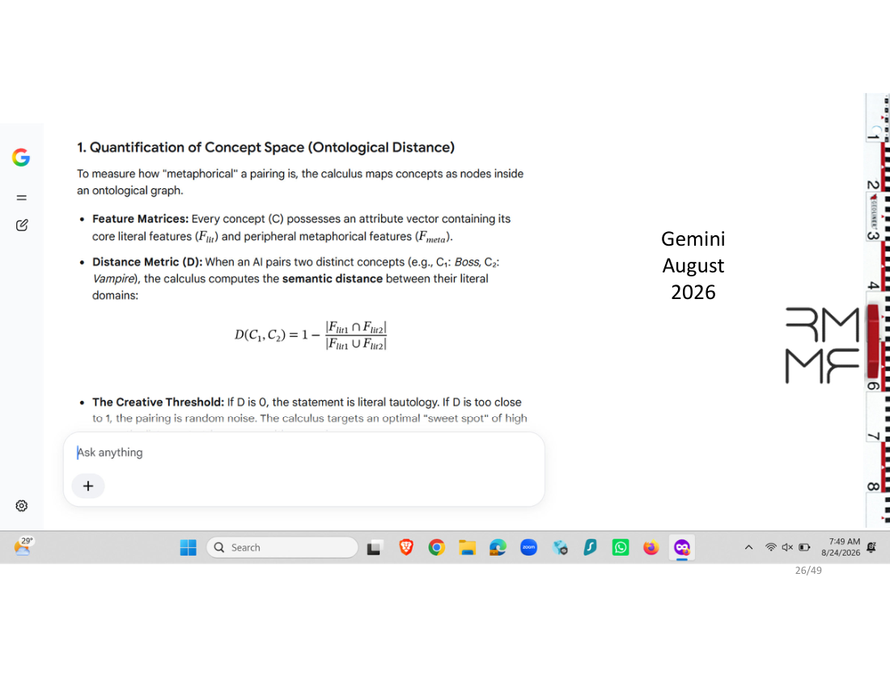
1. 概念空间的量化（Quantification）（本体距离（Ontological Distance））
图示说明：Gemini（2026 年 8 月）
为了测量（measure）一对概念的“隐喻程度”，该微积分将概念映射为本体图谱（ontological graph）中的节点。
- 特征矩阵（Feature Matrices）：每个概念（C）都拥有一个属性向量（attribute vector），其中包含其核心字面特征（Flit）和外围隐喻特征（Fmeta）。
- 距离度量（Distance Metric, D）：当 AI 将两个不同的概念配对时（例如 C1：Boss 老板，C2：Vampire 吸血鬼），该微积分会计算它们字面域之间的语义距离（semantic distance）：
- 创造力阈值（Threshold）（The Creative Threshold）：如果 D 为 0，则该陈述属于字面上的同义反复（tautology）。如果 D 过于接近 1，则该配对只是随机噪声（random noise）。该微积分旨在寻找高……的理想“最佳平衡点”（sweet spot）（注：页面底部后续文字被界面“Ask anything”输入框遮挡）
英文检索原文（公式与版式请看左侧原图）
Gemini August 2026 26/49

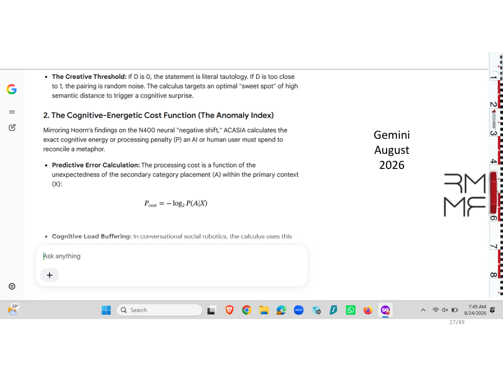
图示说明：Gemini（2026 年 8 月）
- 创造力阈值（Threshold）（The Creative Threshold）：如果 D 为 0，则该陈述属于字面上的同义反复（tautology）。如果 D 过于接近 1，则该配对只是随机噪声（random noise）。该微积分旨在寻找高语义距离（semantic distance）的理想“最佳平衡点”（sweet spot），以触发认知惊喜。
2. 认知—能量代价函数（Cost Function）（异常指数（The Anomaly Index））
呼应 Hoorn 关于 N400 神经“负向偏移”（N400 neural "negative shift"） 的研究发现，ACASIA 会计算 AI 或人类用户为了调和（理解）一个隐喻所必须付出的精确认知能量或加工惩罚（P）。
- 预测误差（Predictive Error）计算（Predictive Error Calculation）：加工代价是次级类别放置（A）在主要语境（X）中出现之意外程度的函数：
- 认知负荷（Cognitive Load）缓冲（Cognitive Load Buffering）：在对话式社交机器人中，该微积分使用这一……（注：页面底部后续文字被界面“Ask anything”输入框遮挡）
英文检索原文（公式与版式请看左侧原图）
Gemini August 2026 27/49

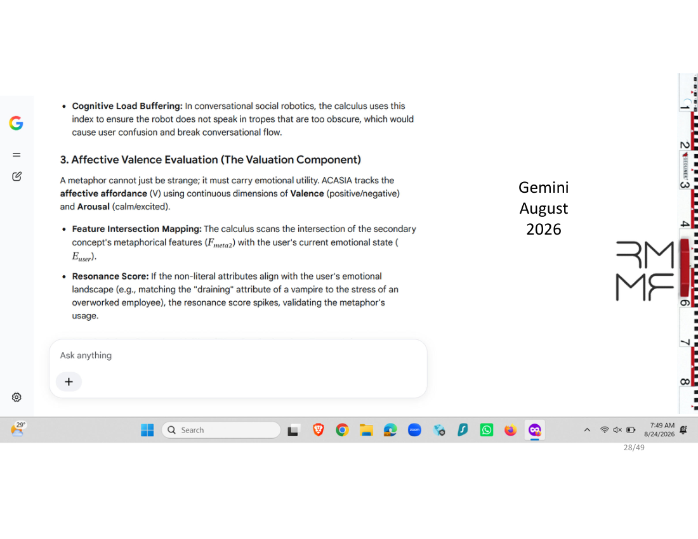
图示说明：Gemini（2026 年 8 月）
- 认知负荷（Cognitive Load）缓冲（Cognitive Load Buffering）：在对话式社交机器人中，该微积分使用这一指数来确保机器人不会说出过于晦涩的比喻（tropes），从而避免引起用户困惑并打断对话流畅度。
3. 情感效价（Affective Valence）评估（估值组件，The Valuation Component）
一个隐喻不能只是奇特；它必须带有情感效用（utility）。ACASIA 使用效价（Valence）（积极/消极）和唤醒度（Arousal）（平静/兴奋）的连续维度（continuous dimensions）来追踪情感可供性（affective affordance, V）。
- 特征交集映射（Feature Intersection Mapping）：该微积分扫描次级概念的隐喻特征（Fmeta2）与用户当前情绪状态（Euser）的交集。
- 共鸣得分（Resonance Score）：如果非字面属性与用户的情绪图景相一致（例如，将吸血鬼“吸干精力”的属性与过度劳累员工的压力相匹配），共鸣得分就会飙升，从而验证该隐喻的使用是否合理。
英文检索原文（公式与版式请看左侧原图）
Gemini August 2026 28/49

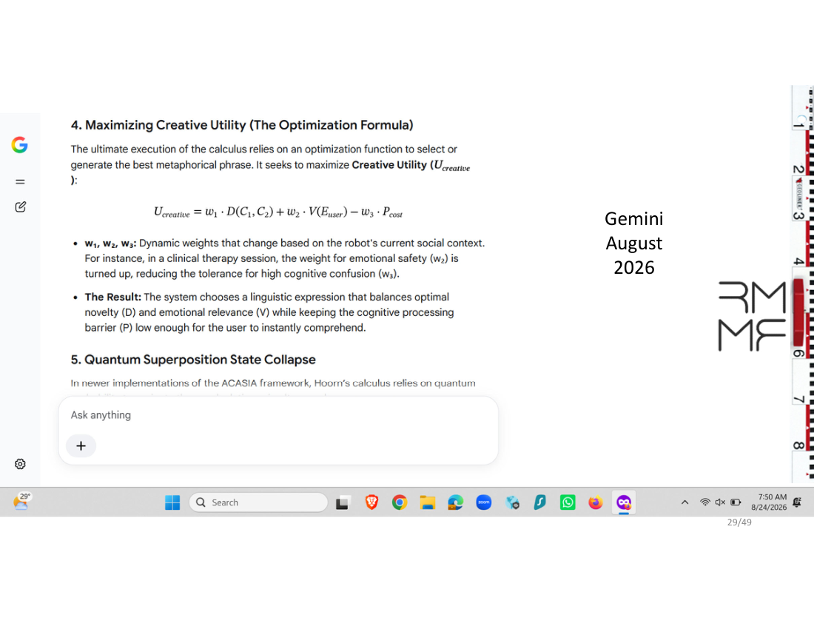
4. 最大化创造性效用（Creative Utility）（优化公式（The Optimization Formula））
图示说明：Gemini（2026 年 8 月）
该微积分的最终执行依赖于一个优化函数（optimization function），用以选择或生成最佳的隐喻短语。它力求最大化创造性效用（Creative Utility）（Ucreative）：
- w1, w2, w3：根据机器人当前社交情境而变化的动态权重（Dynamic weights）。例如，在临床治疗会话中，情绪安全性的权重（weight）（w2）会被调高，从而降低对高认知困惑（w3）的容忍度。
- 结果（The Result）：系统会选择一种在最佳新颖性（D）和情感相关性（V）之间取得平衡的语言表达，同时将认知加工障碍（P）保持在足够低的水平，使用户能够立即理解。
5. 量子叠加态坍缩（Quantum Superposition State Collapse）
在 ACASIA 框架的较新实现中，Hoorn 的微积分依赖于量子……（注：页面底部后续文字被界面“Ask anything”输入框遮挡）
英文检索原文（公式与版式请看左侧原图）
Gemini August 2026 29/49

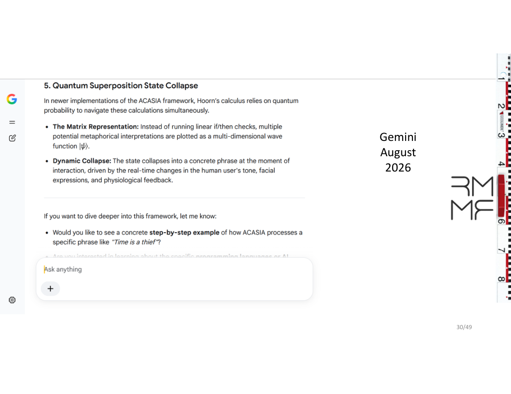
5. 量子叠加态坍缩（Quantum Superposition State Collapse）
在 ACASIA 框架（framework） 的较新实现中，Hoorn 的演算依托量子概率（quantum probability）来同时推进这些计算。
- 矩阵表征（The Matrix Representation）： 不再运行线性的 if/then 检查，而是将多种潜在的隐喻性解释绘制为一个多维波函数 |ψ⟩。
- 动态坍缩（Dynamic Collapse）： 该状态在交互瞬间坍缩为具体短语，由人类用户语气、面部表情及生理反馈（physiological feedback）的实时变化所驱动。
如果你想更深入地了解这一框架（framework），请告诉我：
- 你想看一个具体的分步示例（step-by-step example），了解 ACASIA 如何处理诸如 “Time is a thief”（“时间是个小偷”）这样的特定短语吗？
- 你是否有兴趣了解具体的编程语言或 AI……（页面下方被输入框遮挡渐隐）
输入框提示： Ask anything（随便问点什么）
右侧标注： Gemini 2026 年 8 月（Gemini August 2026）
英文检索原文（公式与版式请看左侧原图）
Gemini August 2026 30/49

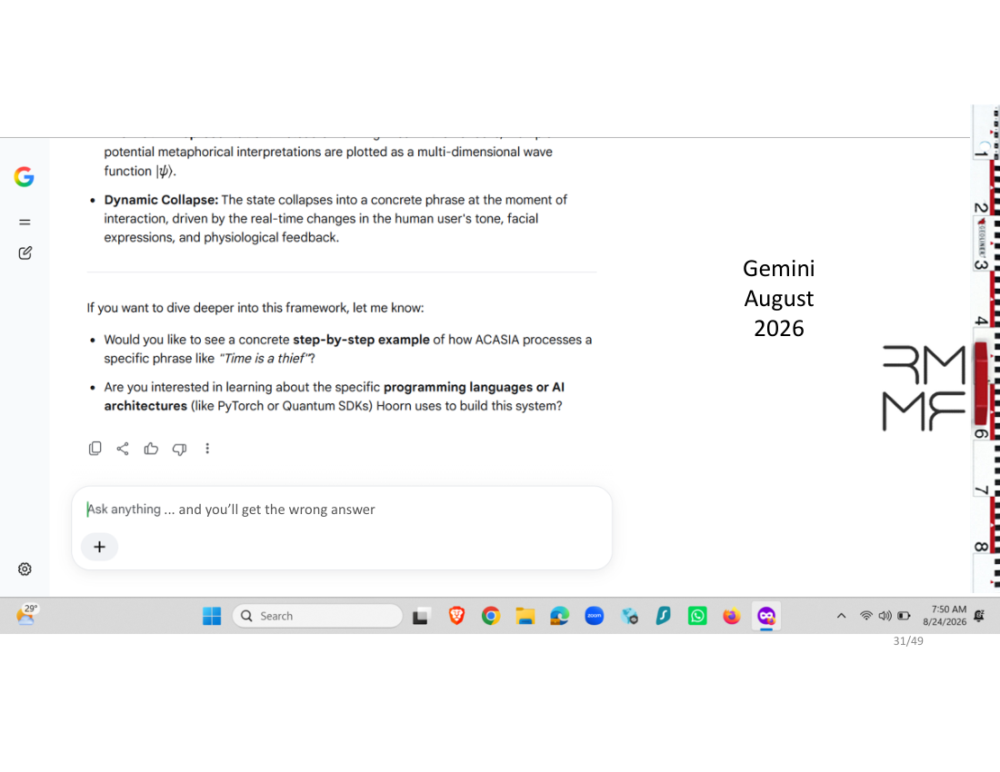
Gemini（2026 年 8 月）
……然后你就会得到错误的答案
英文检索原文（公式与版式请看左侧原图）
Gemini August 2026 ... and you’ll get the wrong answer 31/49

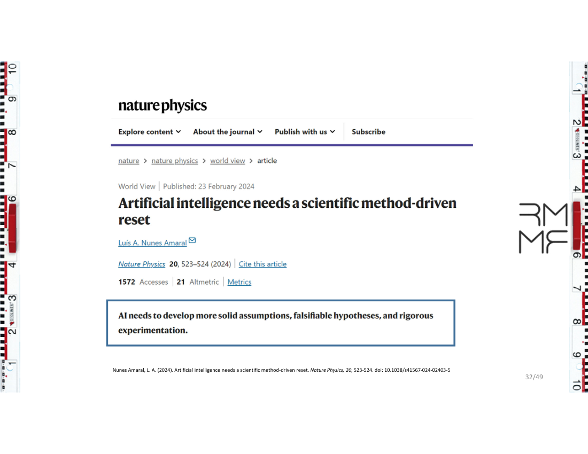
Nunes Amaral, L. A. (2024). Artificial intelligence needs a scientific method-driven reset. Nature Physics, 20, 523-524. doi: 10.1038/s41567-024-02403-5
英文检索原文（公式与版式请看左侧原图）
Nunes Amaral, L. A. (2024). Artificial intelligence needs a scientific method-driven reset. Nature Physics, 20, 523-524. doi: 10.1038/s41567-024-02403-5 32/49

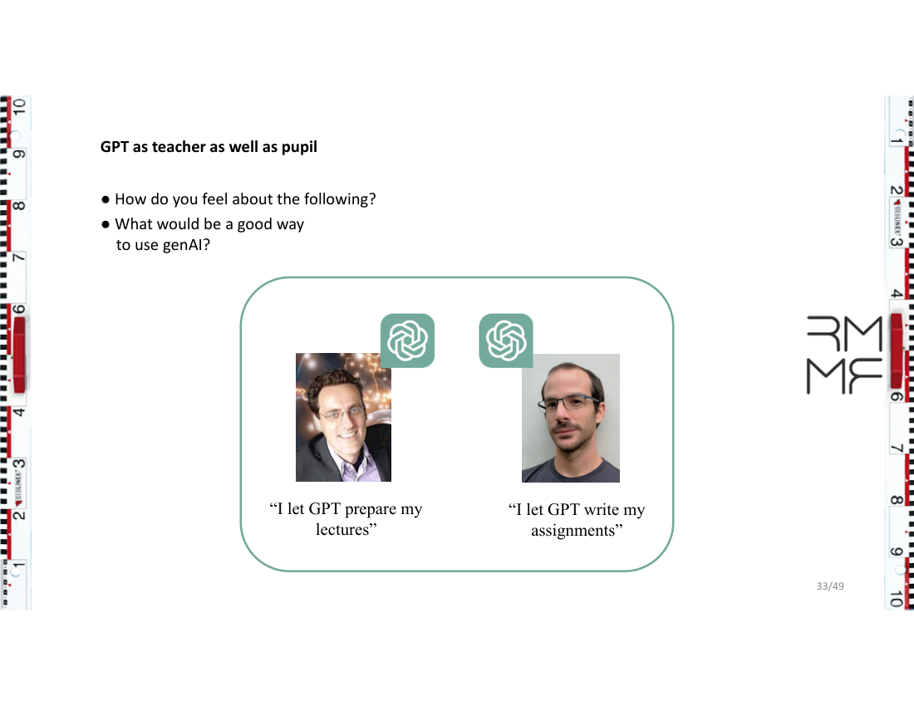
GPT 既是老师也是学生
“我让 GPT 来备课”
“我让 GPT 来写我的作业”
- 你对以下情况有何感受？
- 使用生成式人工智能（genAI）的恰当方式会是什么？
英文检索原文（公式与版式请看左侧原图）
33/49 GPT as teacher as well as pupil “I let GPT prepare my lectures” “I let GPT write my assignments” ●How do you feel about the following? ●What would be a good way to use genAI?

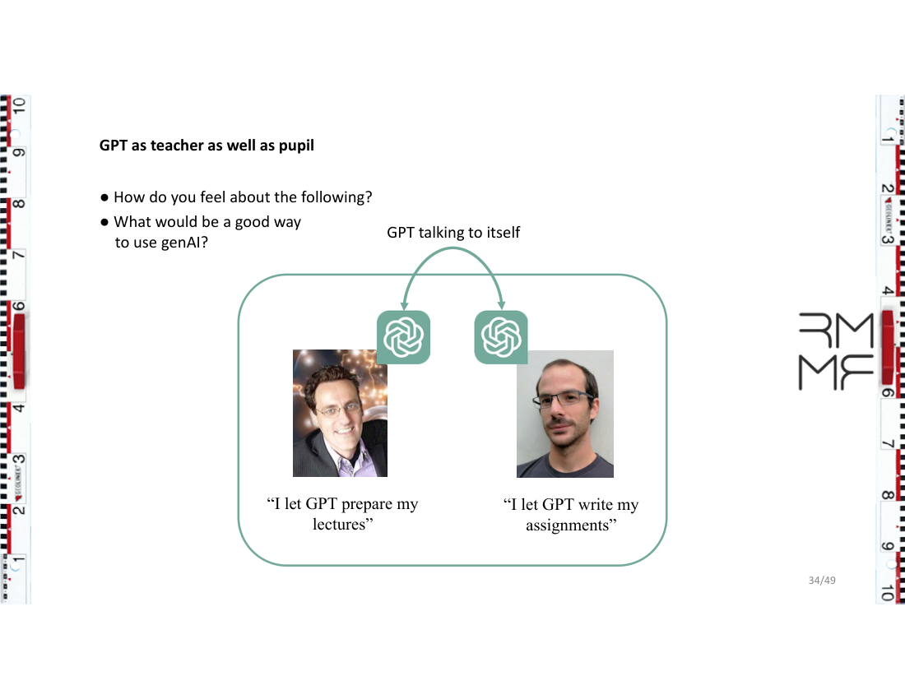
GPT 既是老师也是学生
“我让 GPT 来备课”
“我让 GPT 来写我的作业”
GPT 在自言自语
- 你对以下情况有何感受？
- 使用生成式人工智能（genAI）的恰当方式会是什么？
英文检索原文（公式与版式请看左侧原图）
34/49 GPT as teacher as well as pupil “I let GPT prepare my lectures” “I let GPT write my assignments” GPT talking to itself ●How do you feel about the following? ●What would be a good way to use genAI?

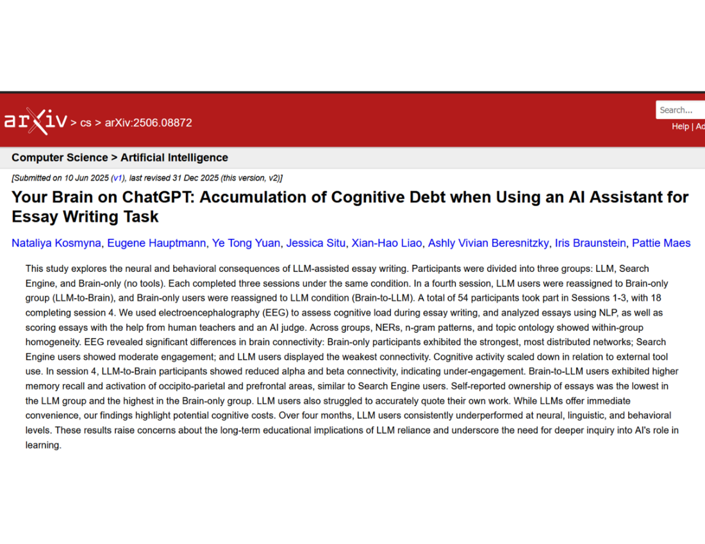
页面顶栏： arXiv > cs > arXiv:2506.08872（右侧搜索框：Search... / Help | Ad...）
学科分类： Computer Science > Artificial Intelligence（计算机科学 > 人工智能）
提交信息： [Submitted on 10 Jun 2025 (v1), last revised 31 Dec 2025 (this version, v2)]（[于 2025 年 6 月 10 日提交（v1），最后修订于 2025 年 12 月 31 日（本版本，v2）]）
你的大脑在用 ChatGPT 时的状态：使用 AI 助手完成论文写作任务时的认知债务累积（Your Brain on ChatGPT: Accumulation of Cognitive Debt when Using an AI Assistant for Essay Writing Task）
Nataliya Kosmyna, Eugene Hauptmann, Ye Tong Yuan, Jessica Situ, Xian-Hao Liao, Ashly Vivian Beresnitsky, Iris Braunstein, Pattie Maes
本研究探讨了大语言模型（LLM）辅助论文写作的神经与行为后果。被试（Participants）被分为三组：LLM 组、搜索引擎组（Search Engine）以及纯大脑组（Brain-only，不使用任何工具）。每名被试均在相同实验条件（condition）下完成了三个实验阶段（sessions）。在第四个阶段中，LLM 组用户被重新分配（reassigned）至纯大脑组（LLM-to-Brain），而纯大脑组用户则被重新分配至 LLM 实验条件（condition）（Brain-to-LLM）。共有 54 名被试（participants）参与了第 1–3 阶段，其中 18 人完成了第 4 阶段。我们使用脑电图（electroencephalography, EEG）来评估论文写作过程中的认知负荷（cognitive load），并使用自然语言处理（NLP）对文章进行分析，同时借助人类教师和 AI 评判员对文章进行评分（scoring）。在各组中，命名实体识别（NERs）、n 元语法模式（n-gram patterns）以及主题本体（topic ontology）均显示出组内同质性（within-group homogeneity）。脑电图（EEG）揭示了大脑连接性上的显著差异（significant differences）：纯大脑组被试表现出最强、分布最广的网络；搜索引擎组用户表现出中等程度的参与度；而 LLM 组用户则显示出最弱的连接性。认知活动随着外部工具的使用而按比例下降。在第 4 阶段中，LLM-to-Brain 组被试表现出 alpha 频段（alpha） 和 beta 频段（beta） 连接性的降低，表明其参与度不足。Brain-to-LLM 组用户则表现出更高的记忆回忆水平以及枕顶叶和前额叶区域的激活，与搜索引擎组用户相似。对文章的自我报告（Self-reported）所有权在 LLM 组中最低，在纯大脑组中最高。LLM 组用户也难以准确引用自己写过的内容。尽管 LLM 提供了即时便利，我们的研究结果仍凸显了潜在的认知代价。在四个月的时间里，LLM 组用户在神经、语言和行为层面的表现持续欠佳。这些结果引发了人们对依赖 LLM 所带来长期教育影响的担忧，并强调了深入探究 AI 在学习中所扮演角色的必要性。
英文检索原文（公式与版式请看左侧原图）

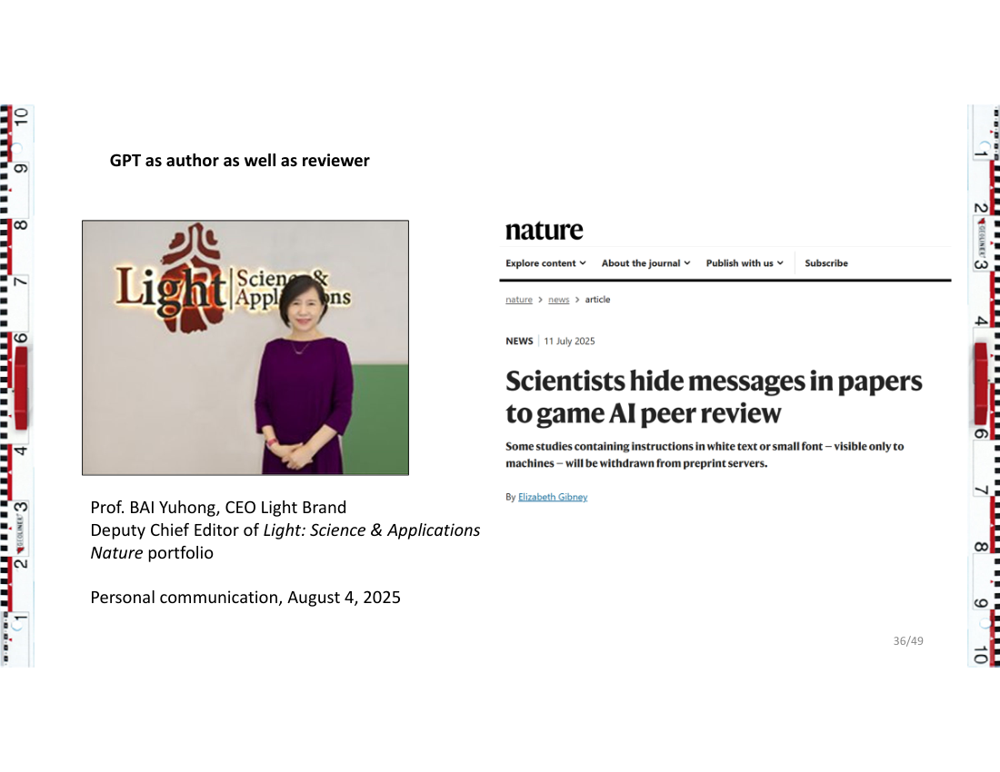
GPT 既是作者也是审稿人（reviewer）
Prof. BAI Yuhong，Light 品牌首席执行官（CEO）
《Light: Science & Applications》副主编
Nature 旗下期刊系列
个人交流（Personal communication），2025 年 8 月 4 日
英文检索原文（公式与版式请看左侧原图）
36/49 Prof. BAI Yuhong, CEO Light Brand Deputy Chief Editor of Light: Science & Applications Nature portfolio Personal communication, August 4, 2025 GPT as author as well as reviewer

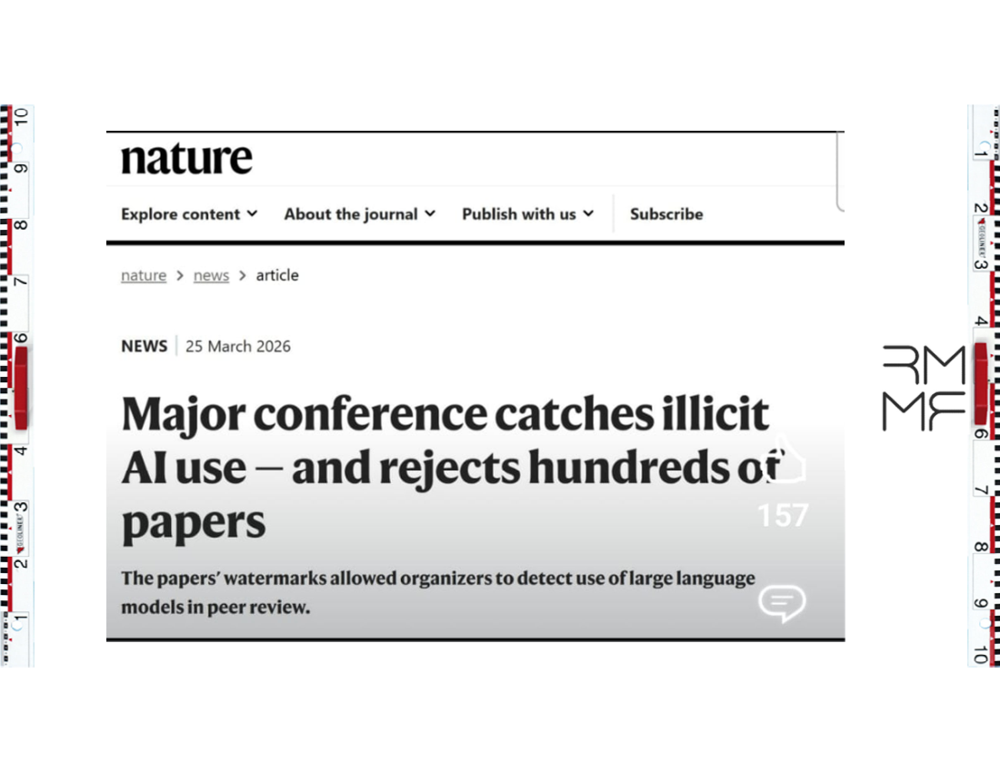
刊头与导航： nature | Explore content（探索内容） | About the journal（关于本刊） | Publish with us（向我们投稿） | Subscribe（订阅）
路径导航： nature > news > article
栏目与日期： NEWS（新闻） | 25 March 2026（2026 年 3 月 25 日）
重要学术会议查获违规使用 AI——并拒稿数百篇论文（Major conference catches illicit AI use — and rejects hundreds of papers）
论文中的水印使组织者得以检测出同行评审（peer review）中对大语言模型（large language models）的使用。
（页面右下角叠有社交媒体点赞数 157 与评论图标）
英文检索原文（公式与版式请看左侧原图）

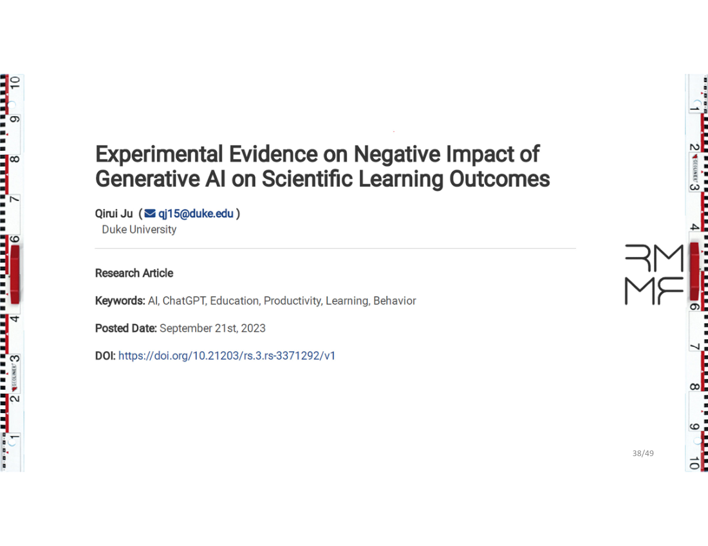
生成式 AI 对科学学习成果负面影响的实验证据（Experimental Evidence）（Negative Impact of Generative AI on Scientific Learning Outcomes）
Qirui Ju（qj15@duke.edu）
Duke University（杜克大学）
- 研究论文（Research Article）
- 关键词（Keywords）：AI、ChatGPT、教育（Education）、生产力（Productivity）、学习（Learning）、行为（Behavior）
- 发布日期（Posted Date）：2023 年 9 月 21 日（September 21st, 2023）
- DOI：https://doi.org/10.21203/rs.3.rs-3371292/v1
英文检索原文（公式与版式请看左侧原图）
38/49

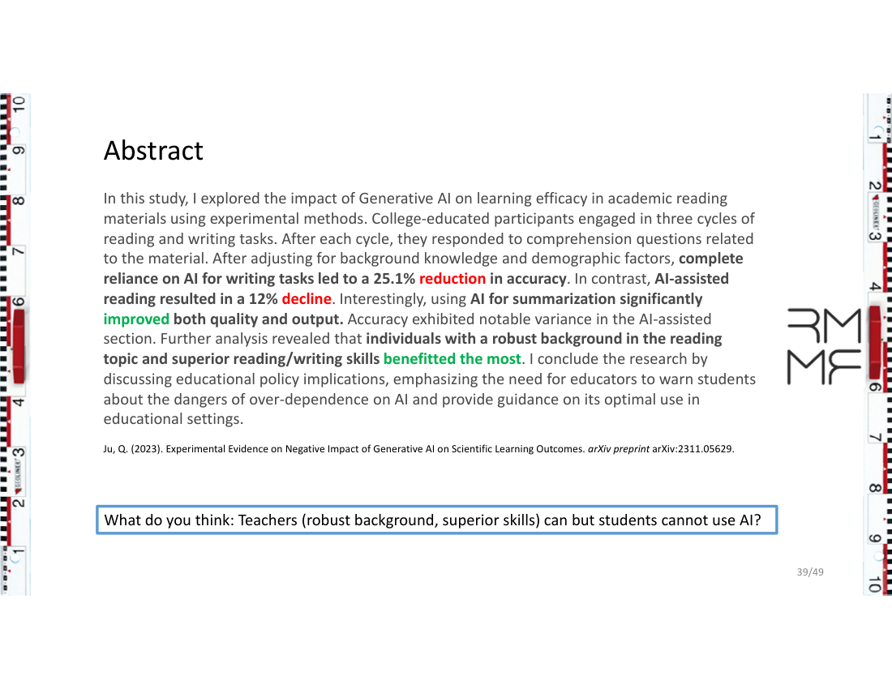
摘要（Abstract）
在本研究中，我采用实验方法（experimental methods）探讨了生成式人工智能（Generative AI）对学术阅读材料学习效能的影响。受过大学教育的参与者（participants）参与了三轮阅读与写作任务。每一轮结束后，他们都需要回答与阅读材料相关的理解问题。在控制了背景知识和人口统计学因素（demographic factors）后，写作任务完全依赖 AI 导致准确率（accuracy）下降了 25.1%。相比之下，AI 辅助阅读导致了 12% 的下降。有趣的是，使用 AI 进行摘要生成显著（significantly）提升了质量和产出。在 AI 辅助部分中，准确率（Accuracy）表现出明显的方差（variance）。进一步分析显示，在阅读主题上具备扎实背景且拥有出色读写能力的个体受益最多。最后，我讨论了教育政策启示以总结本研究，强调教育者需要警示学生过度依赖 AI 的危险，并就其在教育场景中的最佳使用方式提供指导。
Ju, Q. (2023). Experimental Evidence on Negative Impact of Generative AI on Scientific Learning Outcomes. arXiv preprint arXiv:2311.05629.
你怎么看：老师（具备扎实背景、出色技能）可以用 AI，而学生不能用吗？
英文检索原文（公式与版式请看左侧原图）
Abstract In this study, I explored the impact of Generative AI on learning efficacy in academic reading materials using experimental methods. College-educated participants engaged in three cycles of reading and writing tasks. After each cycle, they responded to comprehension questions related to the material. After adjusting for background knowledge and demographic factors, complete reliance on AI for writing tasks led to a 25.1% reduction in accuracy. In contrast, AI-assisted reading resulted in a 12% decline. Interestingly, using AI for summarization significantly improved both quality and output. Accuracy exhibited notable variance in the AI-assisted section. Further analysis revealed that individuals with a robust background in the reading topic and superior reading/writing skills benefitted the most. I conclude the research by discussing educational policy implications, emphasizing the need for educators to warn students about the dangers of over-dependence on AI and provide guidance on its optimal use in educational settings. Ju, Q. (2023). Experimental Evidence on Negative Impact of Generative AI on Scientific Learning Outcomes. arXiv preprint arXiv:2311.05629. What do you think: Teachers (robust background, superior skills) can but students cannot use AI? 39/49

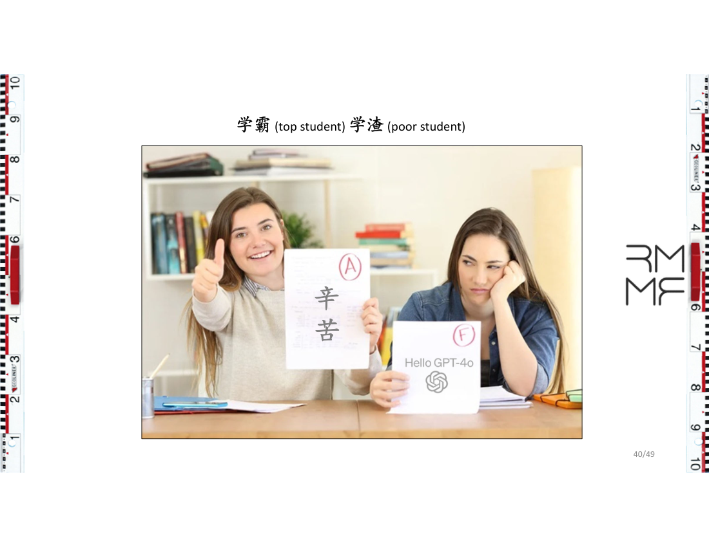
学霸（top student） 学渣（poor student）
辛
苦
英文检索原文（公式与版式请看左侧原图）
40/49 学霸(top student) 学渣(poor student) 辛 苦

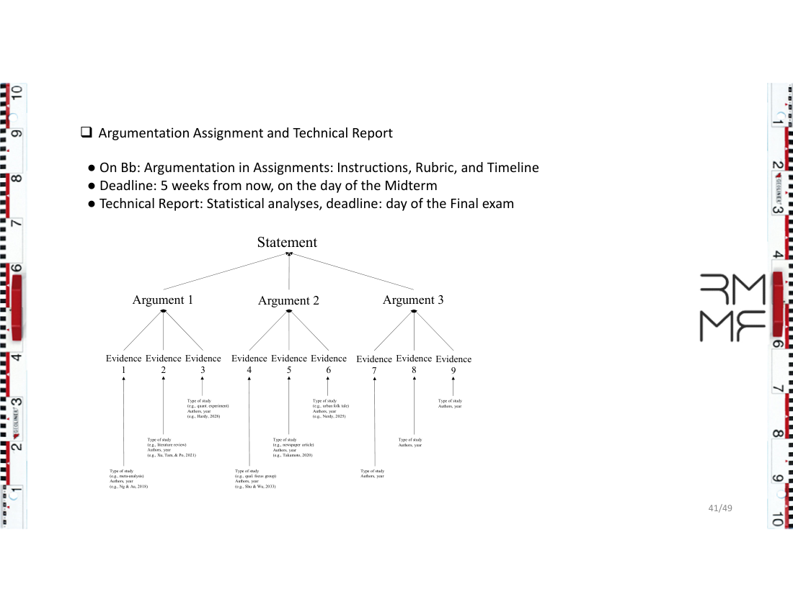
论证（Argumentation）作业与技术报告（Technical Report）
- 在 Bb 上：《作业中的论证：说明、评分标准与时间线》（Argumentation in Assignments: Instructions, 评分细则（Rubric）, and Timeline）
- 截止日期：从现在起 5 周后，即期中考试（Midterm）当天
- 技术报告（Technical Report）：统计分析（Statistical analyses），截止日期：期末考试（Final exam）当天
论点陈述（Statement）
- 论据（Argument） 1
- 证据（Evidence） 1：研究类型（Type of study）（例如：元分析（meta-analysis））｜作者，年份（例如：Ng & Au, 2018）
- 证据（Evidence） 2：研究类型（Type of study）（例如：文献综述（literature review））｜作者，年份（例如：Xu, Tam, & Po, 2021）
- 证据（Evidence） 3：研究类型（Type of study）（例如：量化实验（quant. experiment））｜作者，年份（例如：Hardy, 2028）
- 论据（Argument） 2
- 证据（Evidence） 4：研究类型（Type of study）（例如：质性焦点小组（qual. focus group））｜作者，年份（例如：Shu & Wu, 2033）
- 证据（Evidence） 5：研究类型（Type of study）（例如：报纸文章，newspaper article）｜作者，年份（例如：Takamoto, 2020）
- 证据（Evidence） 6：研究类型（Type of study）（例如：都市民间故事，urban folk tale）｜作者，年份（例如：Nerdy, 2025）
- 论据（Argument） 3
- 证据（Evidence） 7：研究类型（Type of study）｜作者，年份（Authors, year）
- 证据（Evidence） 8：研究类型（Type of study）｜作者，年份（Authors, year）
- 证据（Evidence） 9：研究类型（Type of study）｜作者，年份（Authors, year）
英文检索原文（公式与版式请看左侧原图）
41/49 Argumentation Assignment and Technical Report ●On Bb: Argumentation in Assignments: Instructions, Rubric, and Timeline ●Deadline: 5 weeks from now, on the day of the Midterm ●Technical Report: Statistical analyses, deadline: day of the Final exam Statement Argument 2 Argument 1 Argument 3 Evidence 5 Evidence 6 Evidence 4 Evidence 8 Evidence 9 Evidence 7 Evidence 2 Evidence 3 Evidence 1 Type of study (e.g., meta-analysis) Authors, year (e.g., Ng & Au, 2018) Type of study (e.g., literature review) Authors, year (e.g., Xu, Tam, & Po, 2021) Type of study (e.g., quant. experiment) Authors, year (e.g., Hardy, 2028) Type of study (e.g., qual. focus group) Authors, year (e.g., Shu & Wu, 2033) Type of study (e.g., newspaper article) Authors, year (e.g., Takamoto, 2020) Type of study (e.g., urban folk tale) Authors, year (e.g., Nerdy, 2025) Type of study Authors, year Type of study Authors, year Type of study Authors, year

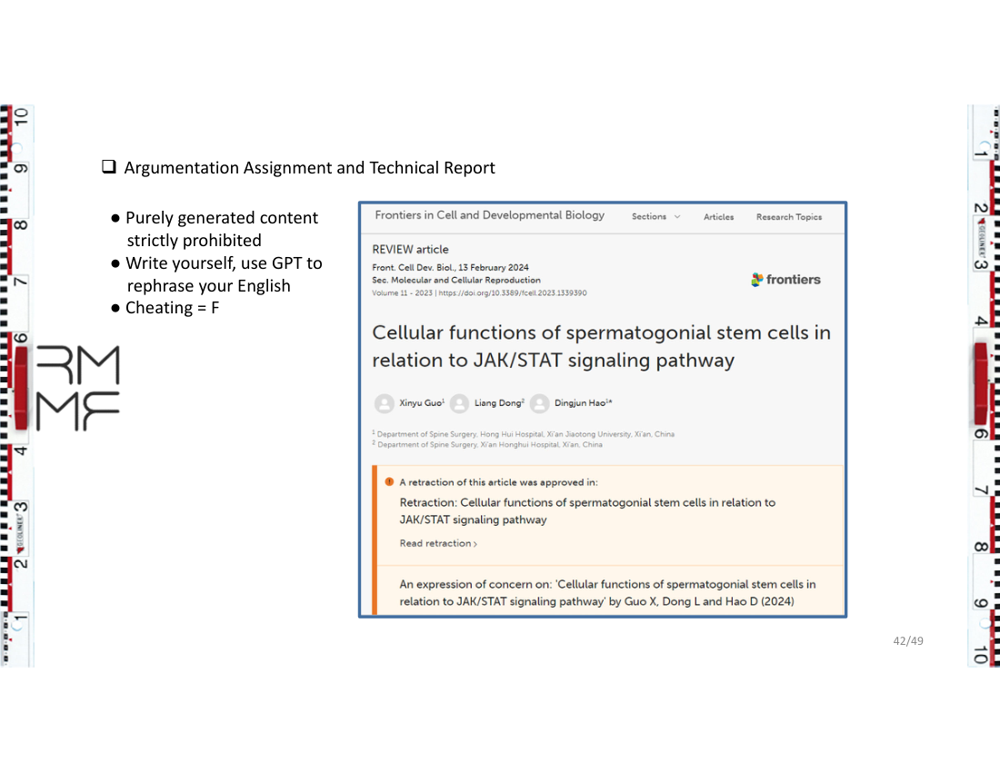
论证（Argumentation）作业与技术报告（Technical Report）
- 严禁纯 AI 生成的内容
- 自己撰写，可使用 GPT 润色改写你的英文表达
- 作弊 = F（不及格）
英文检索原文（公式与版式请看左侧原图）
Argumentation Assignment and Technical Report ●Purely generated content strictly prohibited ●Write yourself, use GPT to rephrase your English ●Cheating = F 42/49

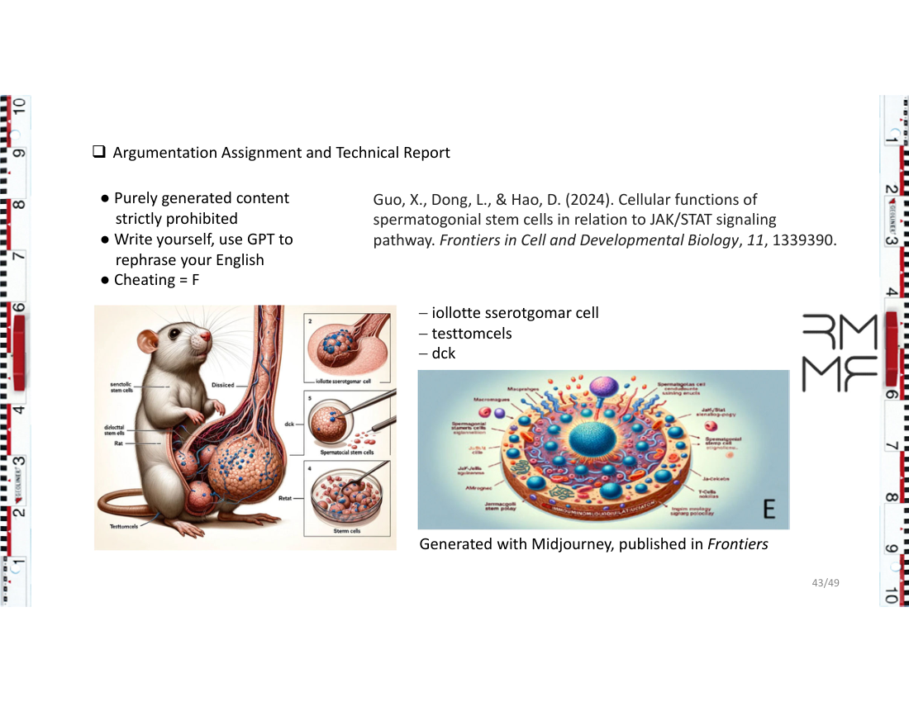
论证（Argumentation）作业与技术报告（Technical Report）
Guo, X., Dong, L., & Hao, D. (2024). Cellular functions of spermatogonial stem cells in relation to JAK/STAT signaling pathway. Frontiers in Cell and Developmental Biology, 11, 1339390.
- iollotte sserotgomar cell
- testtomcels
- dck
使用 Midjourney 生成，发表于《Frontiers》
- 严禁纯 AI 生成的内容
- 自己撰写，可使用 GPT 润色改写你的英文表达
- 作弊 = F（不及格）
英文检索原文（公式与版式请看左侧原图）
Argumentation Assignment and Technical Report 43/49 Guo, X., Dong, L., & Hao, D. (2024). Cellular functions of spermatogonial stem cells in relation to JAK/STAT signaling pathway. Frontiers in Cell and Developmental Biology, 11, 1339390. iollotte sserotgomar cell testtomcels dck Generated with Midjourney, published in Frontiers ●Purely generated content strictly prohibited ●Write yourself, use GPT to rephrase your English ●Cheating = F

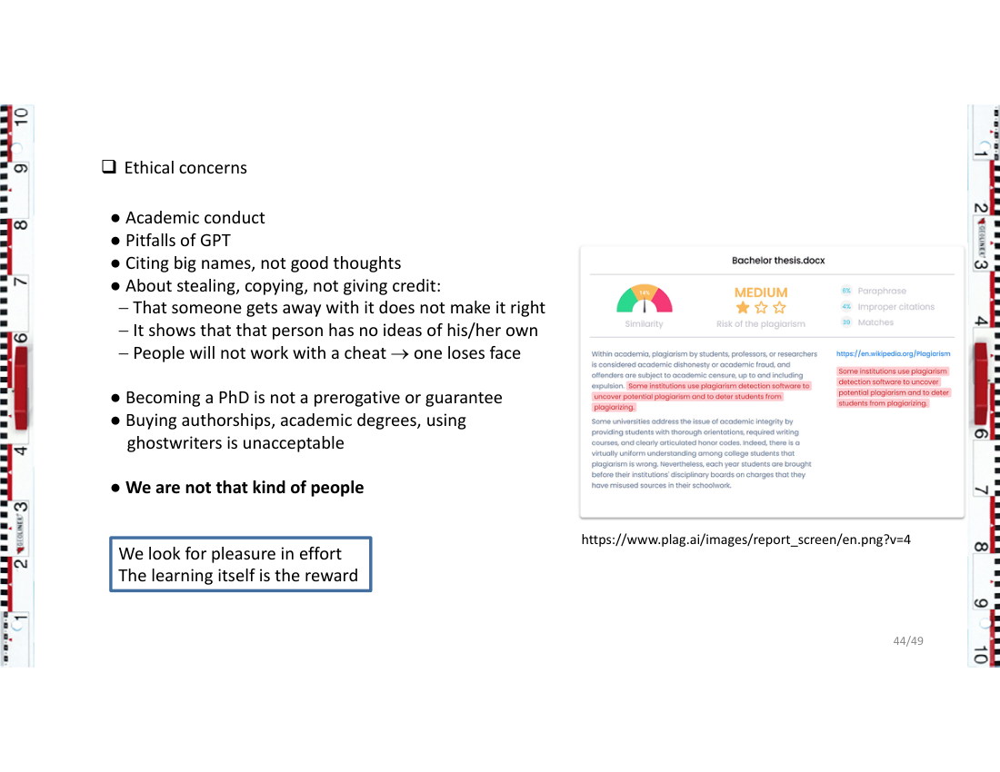
伦理关切（Ethical concerns）
- 学术规范（Academic conduct）
- GPT 的陷阱
- 引用（Citing）大人物，而非优秀思想
- 关于剽窃、抄袭、不标明出处（not giving credit）：
- 有人侥幸逃脱惩罚，并不意味着这就是对的
- 这表明那个人没有自己的想法
- 人们不会愿意与作弊者共事 → 让人颜面尽失
- 成为博士（PhD）并非特权，也不是理所当然的保证
- 买卖署名权（authorships）、购买学位、使用代写是不可接受的
- 我们不是那样的人
- 我们在努力中寻找乐趣
- 学习本身就是回报
https://www.plag.ai/images/report_screen/en.png?v=4
英文检索原文（公式与版式请看左侧原图）
Ethical concerns 44/49 ●Academic conduct ●Pitfalls of GPT ●Citing big names, not good thoughts ●About stealing, copying, not giving credit: That someone gets away with it does not make it right It shows that that person has no ideas of his/her own People will not work with a cheat one loses face ●Becoming a PhD is not a prerogative or guarantee ●Buying authorships, academic degrees, using ghostwriters is unacceptable ●We are not that kind of people We look for pleasure in effort The learning itself is the reward https://www.plag.ai/images/report_screen/en.png?v=4

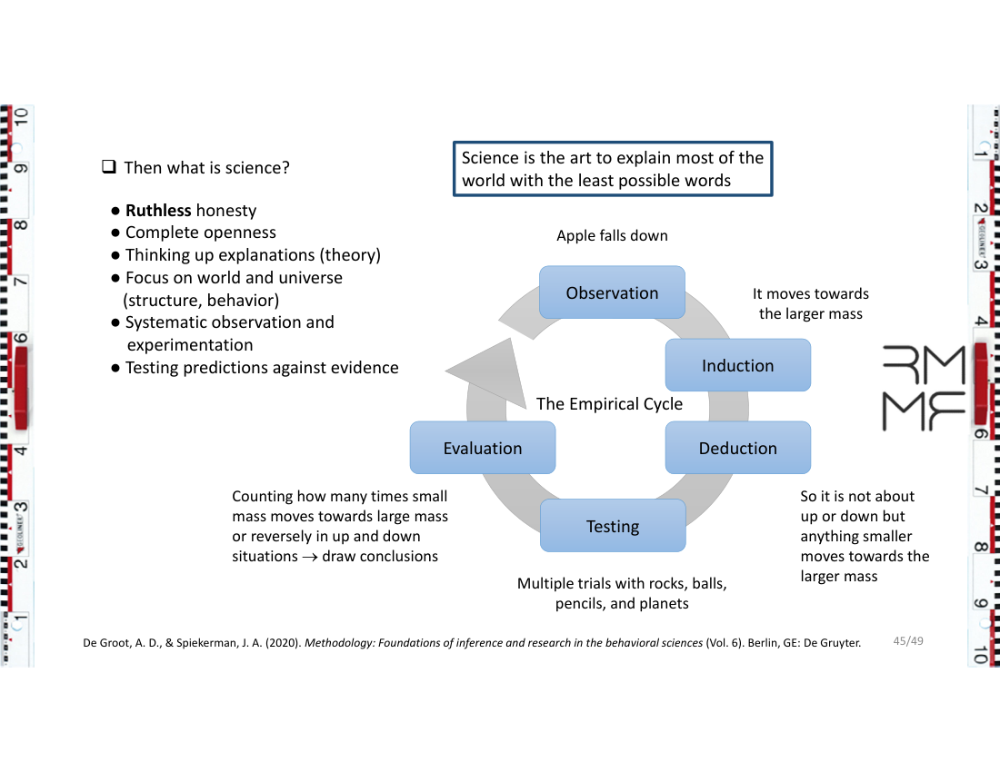
那么，什么是科学（science）？
- 极致的诚实
- 完全的开放性
- 构想解释（理论（theory））
- 关注世界与宇宙（结构、行为）
- 系统观察（Systematic observation）与实验（experimentation）
- 根据证据（evidence）检验预测（predictions）
经验循环（The Empirical Cycle）
- 观察（Observation）：苹果向下掉落
- 归纳（Induction）：它朝向更大的质量移动
- 演绎（Deduction）：因此，这并非关乎上下，而是任何较小的物体都会朝向较大的质量移动
- 检验（Testing）：用石头、球、铅笔和行星进行多次试验（Multiple trials）
- 评估（Evaluation）：统计在上下方向情境中小质量物体朝向大质量物体移动（或相反情况）的次数 → 得出结论（conclusions）
De Groot, A. D., & Spiekerman, J. A. (2020). Methodology: Foundations of inference and research in the behavioral sciences (Vol. 6). Berlin, GE: De Gruyter.
科学（Science）是用尽可能少的语言解释绝大多数世界现象的艺术
英文检索原文（公式与版式请看左侧原图）
Then what is science? 45/49 ●Ruthless honesty ●Complete openness ●Thinking up explanations (theory) ●Focus on world and universe (structure, behavior) ●Systematic observation and experimentation ●Testing predictions against evidence Observation Induction Deduction Testing Evaluation Apple falls down It moves towards the larger mass So it is not about up or down but anything smaller moves towards the larger mass Multiple trials with rocks, balls, pencils, and planets Counting how many times small mass moves towards large mass or reversely in up and down situations draw conclusions The Empirical Cycle De Groot, A. D., & Spiekerman, J. A. (2020). Methodology: Foundations of inference and research in the behavioral sciences (Vol. 6). Berlin, GE: De Gruyter. Science is the art to explain most of the world with the least possible words

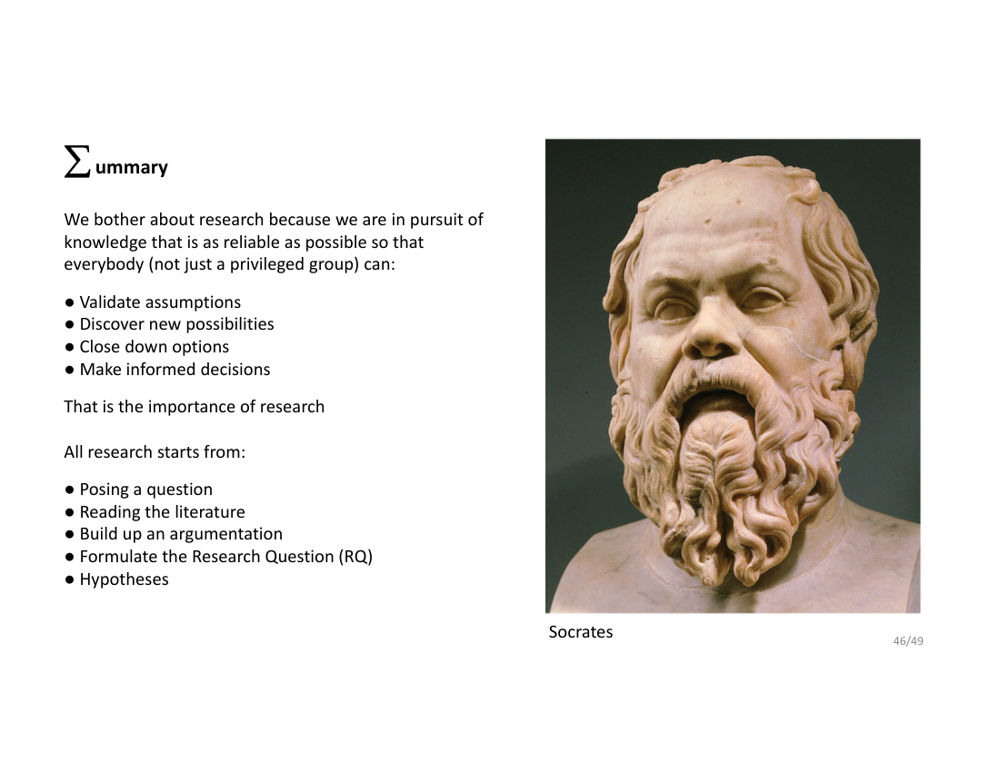
总结（∑ummary）
我们之所以重视研究（research），是因为我们追求尽可能可靠（reliable）的知识，从而使每个人（而不仅仅是特权群体）都能够：
- 验证假设（Validate assumptions）
- 发现新的可能性（Discover new possibilities）
- 收窄选项（Close down options）
- 做出有依据的决策（Make informed decisions）
这就是研究的重要性（importance of research）
所有研究（research）都始于：
- 提出问题
- 阅读文献（literature）
- 构建论证（argumentation）
- 提出研究问题（Research Question, RQ）
- 提出假设（Hypotheses）
Socrates（苏格拉底）
英文检索原文（公式与版式请看左侧原图）
ummary We bother about research because we are in pursuit of knowledge that is as reliable as possible so that everybody (not just a privileged group) can: ●Validate assumptions ●Discover new possibilities ●Close down options ●Make informed decisions That is the importance of research All research starts from: ●Posing a question ●Reading the literature ●Build up an argumentation ●Formulate the Research Question (RQ) ●Hypotheses 46/49 Socrates

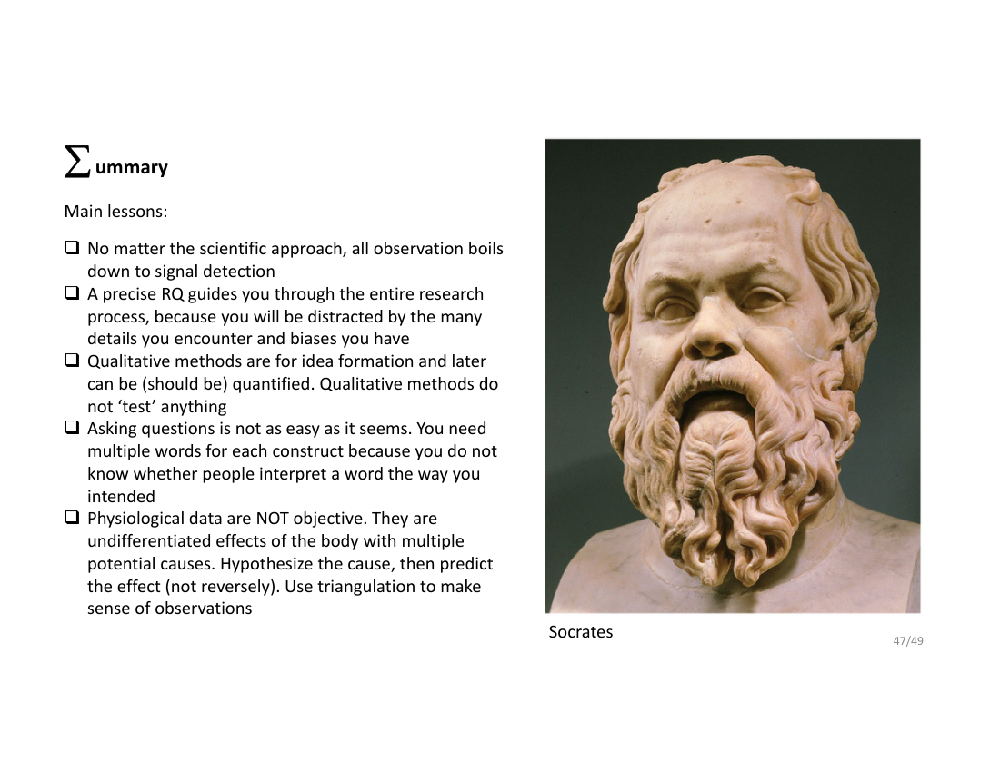
总结（∑ummary）
核心结论（Main lessons）：
- 无论采用何种科学方法（scientific approach），一切观察（observation）归根结底都是信号检测（signal detection）
- 一个精确的研究问题（RQ）会指引你走完整个研究过程（research process），因为你会被自己遇到的许多细节以及自身持有的偏差（biases）所干扰
- 质性方法（Qualitative methods）用于形成想法，且之后可以（也应当）被量化（quantified）。质性方法（Qualitative methods）并不「检验（test）」任何东西
- 提问并不像看上去那么容易。你需要为每个构念（construct）使用多个词语，因为你无法确定人们是否会按你原本设想的方式去理解某个词语
- 生理数据（Physiological data）并非客观（objective）的。它们是身体在多种潜在原因下产生的未分化反应。应当先对原因（cause）提出假设（Hypothesize），再去预测（predict）效应（effect）（而不是反过来）。利用三角互证（triangulation）来理解观察结果（observations）
Socrates（苏格拉底）
英文检索原文（公式与版式请看左侧原图）
ummary Main lessons: No matter the scientific approach, all observation boils down to signal detection A precise RQ guides you through the entire research process, because you will be distracted by the many details you encounter and biases you have Qualitative methods are for idea formation and later can be (should be) quantified. Qualitative methods do not ‘test’ anything Asking questions is not as easy as it seems. You need multiple words for each construct because you do not know whether people interpret a word the way you intended Physiological data are NOT objective. They are undifferentiated effects of the body with multiple potential causes. Hypothesize the cause, then predict the effect (not reversely). Use triangulation to make sense of observations 47/49 Socrates

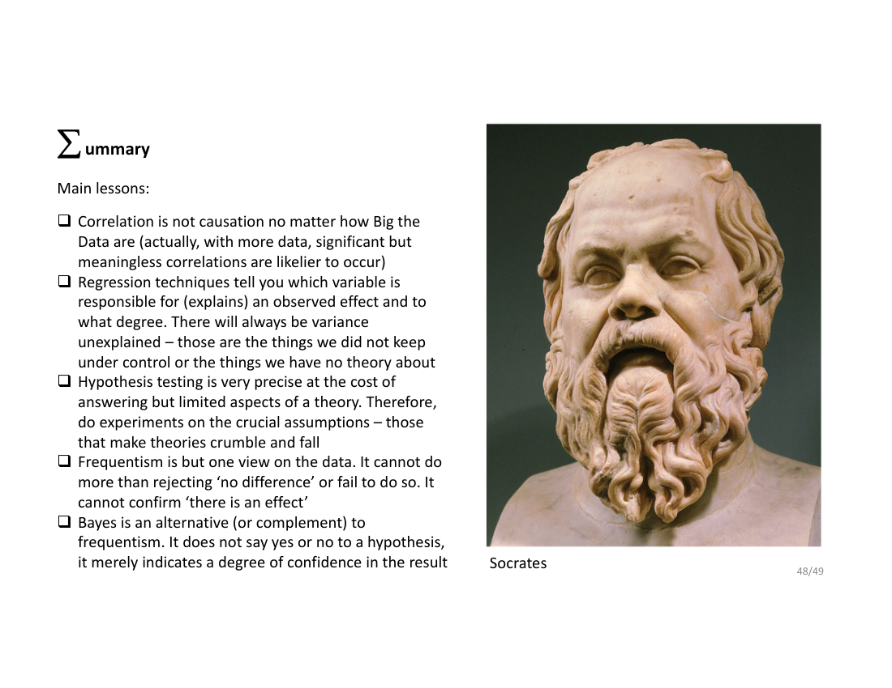
总结（∑ummary）
核心结论（Main lessons）：
- 无论大数据（Big Data）有多「大」，相关（Correlation）都不等于因果关系（causation）（事实上，数据越多，越容易出现统计上显著（significant）却毫无意义的相关（correlations））
- 回归技术（Regression techniques）能告诉你哪个变量（variable）导致（解释）了观测到的效应（effect）以及解释到什么程度。总会存在未解释方差（variance unexplained）——那些正是我们未能加以控制（control）的因素，或是我们尚未拥有相关理论（theory）的事物
- 假设检验（Hypothesis testing）非常精确，但其代价是只能回答理论（theory）中有限的方面。因此，应当针对关键假设（crucial assumptions）开展实验（experiments）——即那些一旦不成立就会使整个理论崩塌的假设
- 频率主义（Frequentism）只是看待数据的一种视角。它能做的无非是拒绝（rejecting）「无差异」或未能拒绝；它无法证实「存在效应（effect）」
- 贝叶斯方法（Bayes）是频率主义（frequentism）的替代方案（或补充）。它不对某个假设（hypothesis）给出「是」或「否」的判定，而只是给出结果的可信程度（置信度（degree of confidence））
Socrates（苏格拉底）
英文检索原文（公式与版式请看左侧原图）
ummary Main lessons: Correlation is not causation no matter how Big the Data are (actually, with more data, significant but meaningless correlations are likelier to occur) Regression techniques tell you which variable is responsible for (explains) an observed effect and to what degree. There will always be variance unexplained – those are the things we did not keep under control or the things we have no theory about Hypothesis testing is very precise at the cost of answering but limited aspects of a theory. Therefore, do experiments on the crucial assumptions – those that make theories crumble and fall Frequentism is but one view on the data. It cannot do more than rejecting ‘no difference’ or fail to do so. It cannot confirm ‘there is an effect’ Bayes is an alternative (or complement) to frequentism. It does not say yes or no to a hypothesis, it merely indicates a degree of confidence in the result 48/49 Socrates

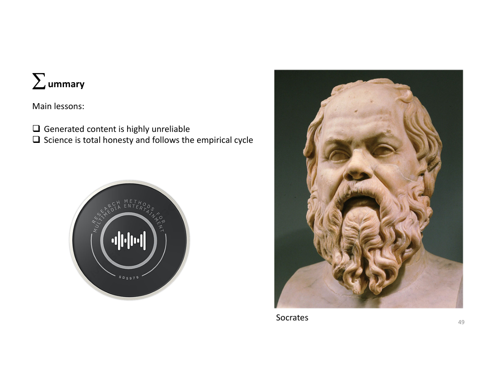
总结（∑ummary）
核心结论（Main lessons）：
- 生成内容高度不可靠（unreliable）
- 科学（Science）就是完全的诚实，并遵循经验循环（empirical cycle）
Socrates（苏格拉底）
英文检索原文（公式与版式请看左侧原图）
ummary Main lessons: Generated content is highly unreliable Science is total honesty and follows the empirical cycle 49 Socrates